prior_heads = rbinom(n = 2, size = 1000, prob = 0.5)
prior_heads[1]/sum(c(prior_heads[1], prior_heads[2]))Bayesian Statistics
Bayesianism has been on the to do list for awhile since well they make the prettiest plots. More importantly we get more coherent measures of uncertainty and are closer to how we actually think of the world. There are lots of broad applications for Bayesianism in the private industry. The betting market for sports and how we think about teams is effectively Bayesian. We incorporate a lot of information about the observable parts of a team like schedule, roster talent, coaching, and guesses about the probablity that the roster will stay healthy. These are all priors we have about things that relate to the success of the team going into the season. As the season progresses and we get data our prior will update. In the case of the Saints this year our prior updated to make them a good team after one game moving our guess about the number of games they would win this year to probably more than their projected win total. With the second win this may have not moved our prior much at all. However, as attrition set in then our prior shifted a little bit back toward the pre-season total so on and so forth.
What is Baye’s Rule?
Formally Bayes rule is usually denoted by this equation.
\[ P(A|B) = \frac{P(A) P(B|A)}{P(B)} \]
While uber important in respect to Bayesian statistics this not always been the easiest way for me to think of Bayes rules with respect to logic of how we do Bayesian statistics. I think its hard to ground it for me because we can just rewrite it a bit and get the law of total probability which doesn’t make it inherently Bayesian. For me I think it is easier to clarify it as
\[ Posterior = \frac{Prior \times \text{Probability of Hypothesis being true | Data}}{\text{Mean probability of Data}} \]
Or we are just counting the number of instances that we observed this data and then we average over the prior which get us our average. Practically this is really just so everything adds to 1. To be a Bayesian is to incorporate our beliefs and then update them as the data meets our hypothesis meets the data or as Rich McCelreth argues
The rules of probability tell us that the logical way to compute the plausibilities, after accounting for the data, is to use Bayes’ theorem.
We then sample from the posterior to communicate something interesting or important about our model. Like where is the mass of the probability distribution, where is the center of this distribution, etc
Bayesianism, in a way, is a formalization of this process by encoding our beliefs in probability distributions. Our prior is really just our belief about the distribution and plausible range of values for that variable before ever seeing the data. So if we were to set a prior for a coin we would set the prior as somthing kind of loosy goosy as this
So in this case we are just stating that the probability of heads is about 50 percent over a thousand trials assuming a fair coin. However, lets say that we know the coin is biased in a known way that makes it come up heads 61% of the time. We could then set our prior that it willl come up heads as this
prior_heads_biased = rbinom(n = 2, size = 1000, prob = .61)This is not neccessarily all that unique from a standard null hypothesis which we covered in the opening “chapter” of this book. It is the combination of the prior and the posterior which makes the Bayesian machine go brrr.
The posterior can we operationalized along these lines
\[ Posterior = \frac{\text{Probability of Data} \times Prior}{\text{Mean probability of Data}} \]
Where we are averaging the probability of the prior. If we derive this out more formally we will see that the posterior is actually proportional to the prodct of the prior and the probability of the data. The posterior distribution contains the relative plausibility of different parameter values, conditional on the data and model. We can overcome a bad prior given an infinite amount of data, but this process will be inefficient and critically we will never reach infinite data. Priors in Bayesian inference are important computationally as well as substantively.
What is a prior really?
Setting a prior is one of the hardest things in Bayesian statistics and the subject a large and rich part of the literature. I think one really important thing to adjudicate is what a prior really is. That way we can reinforce the importance of setting a good one, what to check, and how to check it.
According to Gelman et al. (2013) we can conceptualize the prior distribution along two different lines. There is the population interpretation. This is a little frequentisty but is definitely helpful. Lets say that we have some pseudo population of parameters that the candidate parameter \(\beta\) is drawn from. For simplicity sake lets draw \(\beta\) from as standard normal where we overlay the overall distribution
library(tidyverse)
sim_data = \(beta_val = 0, beta_variance = 1, n = 100){
sim_dat = tibble(beta_values = rnorm(n, mean = beta_val, sd = beta_variance),
beta_mean = rep(beta_val, length.out = n),
beta_variance = rep(beta_variance, length.out = n))
return(sim_dat)
}
pop_sims = map_dfr(c(5, 10, 15), \(x) sim_data(beta_val = x))
wide_version = pop_sims |>
mutate(id = row_number()) |>
pivot_wider(names_from = beta_mean, values_from = beta_values, names_glue = 'mean_{beta_mean}')
plot_dat = wide_version |>
mutate(pop_total = pop_sims$beta_values) |>
pivot_longer(cols = mean_5:mean_15) |>
mutate(nice_labs = as.factor(str_to_title(str_replace(name, '_', " "))),
nice_labs = fct_relevel(nice_labs, 'Mean 5', 'Mean 10', 'Mean 15'))
ggplot(plot_dat) +
geom_density(mapping = aes(x = value, y = after_stat(ncount), fill = nice_labs),
stat = "bin", size = 0.5,
alpha = 0.7) +
geom_density(mapping = aes(x = pop_total, y = after_stat(ncount)),
alpha = 0.9,
color = "gray30", size = 0.6,
stat = "bin",
direction = "mid") +
facet_wrap(vars(nice_labs)) +
MetBrewer::scale_fill_met_d(name = 'Lakota') +
theme_minimal() +
labs(fill = NULL, y = 'Scaled Count') +
theme(legend.position = 'none')So in the population interpretation of priors we have kind of weird population by design. Depending on what ‘draw’ we get our prior could be N(5,1) or it could be N(10,1) where plausible values center around 5 or 10 with a standard deviation of 1. In this setting we are thinking about given the data what is a reasonable set of values that we would expect to see. In this setting we are kind of explicitly using a bit of frequentist logic to bridge the gap. However, instead of assuming that all values between 5-15 are equally plausible we are expliciltly stating that the mass of the distribution will be around some value and the amount of variation that we will have. This could be useful if we have a huge amount of experiments or results banked and we can imagine our plausible beta values as drawn from some distribution of the experiments.
In the state of knowledge interpretation of priors we are still using our subject matter expertise of the phenomena, but there may not be a good population to ground our priors on. Say we are launching a completly new product or expanding our product into a new market. We may have some idea about what we are likely to see but we don’t have the same reference population that we can draw from, but we have at least some idea of what our expectation should be.
An important thing to note about Bayes Rule is that we can think of Bayes rules along these lines
\[ Posterior = \frac{\overbrace{P(A)}^{\text{Prior}} \times \overbrace{\text{Probability of Data}}^{Likelihood}}{\text{Average Probability of Data}} \]
What this means is that effectively the posterior is a bit of a compromise between our data and our beliefs as the size of the data get bigger our prior will have less of an influence on our posterior distribution, but it will never completely evaporate.
How to set priors
Most of the time people say just use your substantive knowledge. But that’s generally not helpful if you haven’t done that in a statistical setting. Lets take it step by step. First we generally outline what we link the distribution of our dependent variable would be. For our outcome variable we may think that its a normal distribution so we would write it like this
\[ Outcome \sim Normal(\mu, \sigma) \]
If it is a binary outcome we would write it like this
\[ Outcome \sim Bernouli(\text{Number of Trials},\text{Probability true}) \]
The next step is is we have to think about our generative model. So to ground our analysis it helps to start from a DAG. We generally have beliefs about an intervention in the world. That way we can start thinking about the potential relationships in our data. We then have to think of the plausible ranges for these values and what the uncertainty around them.
\[ \begin{align} \textbf{Outcome} \sim N(\mu, \sigma) \\[8pt] \textbf{Predictor One} \sim N (3, 1) \end{align} \]
Where we are shifting the mean a bit and putting a somewhat conservative prior. This is generally fine but there are lots of priors we can set.
Lets say that out in the real world by some miracle of god we have a true normal distribution where the mean is zero and the standard deviation is 1. We can set informative, weakly informative, flat/non-informative prior, and a conjugate prior. Conjugate priors are a little bit harder to visualize with the below schema because a conjugate prior is something that also relies on the posterior. Meaning that if it turns out the posterior of our mean comes from the same family then it turns out that our prior is conjugate.
n = 1000
prior_df = tibble(
pop = rnorm(n),
`Kinda Flat` = rnorm(n, sd = 5),
informative = rnorm(n, mean = 0.5, sd = 1)
) |>
pivot_longer(everything(),
names_to = 'prior',
values_to = 'value'
)
ggplot(prior_df, aes(x = value, fill = prior)) +
geom_density(alpha = 0.5) +
scale_fill_manual(values = c('Kinda Flat' = '#a40000', 'informative' = '#00b7a7', 'pop' = '#ffcd12')) +
theme_minimal()This could be better but you kind of get the idea. A flat/uninformative prior is at best a bit like saying “the parameter of interest is somewhere between \(-\infty\) and \(\infty\).” My flat prior in the plot is more akin to a weakly informative prior where we are ruling out impossible values, but not really ruling out extreme values. A weakly informative prior is more akin to like we wouldn’t expect the treatment effect to be all that big but it is not outside of the realm of possibility that due to a weird draw of the experimental population people really take to the treatment. Priors can get pretty crazy because well the real world is messy and making simplyfying assumptions is hard. This is why (most) Bayesians will simulate the world first before even touching the data.
Simulating Worlds
Simulations are superpowerful because we get to play god in a way that we don’t normally get to do as social scientists. We can really simply simulate that you have roughly a 50/50 chance of getting heads or tails.
coin_flips = replicate(10000, sample(c('heads', 'tails'), 1))
coin_flips |>
as_tibble() |>
group_by(value) |>
summarise(counts = n()) |>
ungroup() |>
mutate(probs = counts/sum(counts))While this is intuitive we can see how this varies by number of flips.
num_flips = 100
flips = sample(c('heads', 'tails'), size = num_flips, replace = TRUE)
coin_flips = tibble(
heads_frequency = cumsum(flips == 'heads')/1:num_flips,
flip_number = 1:num_flips
)
ggplot(coin_flips, aes(x = flip_number, y = heads_frequency)) +
geom_line() +
geom_hline(yintercept = 0.5) +
scale_y_continuous(limits = c(0,1)) +
labs(x = 'Flip Number', y = 'Proportion of Heads') +
theme_minimal()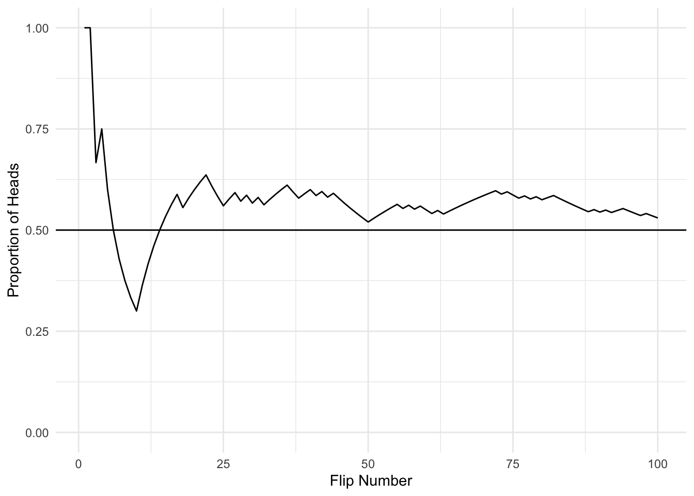
In expectation we start getting closer and closer to 50% heads. Neat, but why should we care? Well we can test how well our prior does on various situations with a known truth.
Lets take a randomized control trial with unobserved confounding using the really excellent DeclareDesign package.
options(scipen = 999)
library(DeclareDesign)
rct <-
declare_model(N = 100,
U = rnorm(N),
potential_outcomes(Y ~ 0.2 * Z + U)) +
declare_inquiry(ATE = mean(Y_Z_1 - Y_Z_0)) +
declare_assignment(Z = complete_ra(N, prob = 0.5)) +
declare_measurement(Y = reveal_outcomes(Y ~ Z)) +
declare_estimator(Y ~ Z, inquiry = "ATE")
fake_data = draw_data(rct)So now we have some fake data where we can display the ‘truth’ or in this case 0.2
diagnose_design(rct)When we go and estimate it on some fake data we can see how keeping or omitting the unobserved confounding.
control_for_confounding = lm(Y ~ Z + U, data = fake_data)
no_controls = lm(Y ~ Z, data = fake_data)
modelsummary::modelsummary(list('Controls Added' = control_for_confounding,
'No Controls' = no_controls),
gof_map = 'nobs',
stars = TRUE)This is pretty cool to see how this can go if we don’t account for things that should be accounted for. The same general principle applies in Bayesian analysis. The reason we simulate out a RCT is that they are super expensive! We want to diagnose what could go wrong before we tell our partners what to do. The same idea applies for Bayes because we have two separate problems that can make it hard to tell what is going on. We have computational problems that can arise due to how Bayesian models are fit and we have modeling problems which are really just scientific problems. Conceptually these are somewhat distinct but practically these two run into each other all the time. We can isolate some of the computational mechanics of fitting a bad model on data we know is ‘good’. This makes fitting lots of models easier.
How should we simulat the data? Typically we will define a parameter that seems reasonable! So if we are trying measure. So if we were trying to model the impact of a treatment on conversion rate aka how often do we move from a free user to a subscriber setting simulating a uniform distribution across treatment and control.
library(patchwork)
library(brms)
library(modelsummary)
library(tidybayes)
library(broom.mixed)
conversions_tibble = tibble(
Control = runif(100, min = 0, max = 100),
Treatment = runif(100, min = 0, max = 100),
) |>
pivot_longer(everything(),
names_to = 'condition',
values_to = 'conversion_rate')
ggplot(conversions_tibble, aes(x = conversion_rate, fill = condition)) +
geom_density() +
facet_wrap(vars(condition), ncol = 1) +
theme_minimal() +
labs(x = 'Conversion Rate', y = NULL) +
theme(legend.position = 'none') We wouldn’t expect that by doing nothing that conversion rate is uniformly distributed between 0 and 100 percent. Conversion rate for Netflix or established streaming services is probably closer to something that looks like this.
Code
conversions_tibble_reasonable = tibble(
# most in the control group don't convert
Control = rbeta(n = 100, shape1 = 3, shape2 = 7) * 10,
# people in the control group are slightly more likely to convert
Treatment = rbeta(n = 100, shape1 = 6, shape2 = 4) * 10,
) |>
pivot_longer(everything(),
names_to = 'condition',
values_to = 'conversion_rate')
ggplot(conversions_tibble_reasonable, aes(x = conversion_rate, fill = condition)) +
geom_density() +
facet_wrap(vars(condition), ncol = 1) +
theme_minimal() +
labs(x = 'Conversion Rate', y = NULL) +
theme(legend.position = 'none') 
Important priors
Checking our Models
There are lots of ways to check our model! One way that is fairly common because Gelman reccomends it is prior predictive checks. The first is a prior predictive check which is just a way for us to check on what influence the prior is going to have on the posterior distribution. As our data grows the influence of our prior is going to decrease and the likelihood function is going to start to have more influence on the posterior distribution. Or in other words how probable the observed data is given different value of the model. However, they are not totally irrelevant the prior can impose a form of regularization shrinking the posterior predictions back towards the ‘true value.’ This is to say that even in large-n settings a well calibrated prior is still important in simple models. In much more complex models the prior is going to do a lot more.
In a sense we did something similar but what we are doing is modeling the problem only using the priors.
titanic <- read.csv("https://vincentarelbundock.github.io/Rdatasets/csv/Stat2Data/Titanic.csv")
titanic <- subset(titanic, PClass != "*")
f <- Survived ~ SexCode + Age + PClass
mod_prior <- brm(PClass ~ SexCode + Age,
data = titanic,
prior = c(
prior(normal(0, 3), class = b, dpar = "mu2nd"),
prior(normal(0, 3), class = b, dpar = "mu3rd")),
family = categorical(link = logit),
sample_prior = "only")
pp_check(mod_prior) 
In this case we the prior does okay matching the observed data. It could definitely be better
We can then check our priors. We can also set priors on the intercept in our Titanic example if we stripped away age, class, and sex what would our baseline expectation of survival be? In an RCT this is really just what is a reasonable expectation for our control group. For other more complex models we could put priors on the effect of time, space, interactions between groupings and so much more.
Using Brms
As an R Bayesian we use brm mostly. We are going to walk through a variety of models that you have fit before using frequentist methods using brms. As the excercise progressed it reallly just became redoing the Statistical Rethinking
Linear Models
So as a good Bayesian we are going to set some priors. First we are going to set a prior for the height in cm and then we are going to set a scale parameter for the weight in kg’s and stretches the distribution. The sigma parameter must be positive. The alpha parameter we are going to think about well what if all the covariates were zero? What would a reasonable set of values be? In this case what would be the weight of an individual be if we never took into account height? Well a somewhat reasonable prior is just taking the average of the weight and spreading it out.
Stan really likes when you scale things because well it makes everything easier to compute. Rescaling in this case gives us the benefit of making the intercept interpretable. Inside the regression the intercept parameter now just becomes the expected weight of an individual is when they are of average height.
data('Howell1', package = 'rethinking')
just_adults = Howell1 |>
filter(age >= 18) |>
mutate(height_z = scale(height))
priors = c(# this is just weight in kilos so approx 132 lbs
prior(normal(60, 10), class = Intercept),
# this is just centering on the new variable. Now we are also
# this is kilos/cm with a spread of 10^2
prior(normal(0, 10), class = b, coef = 'height_z'),
prior(uniform(0,50), class = sigma, ub = 50))
first_cut = brm(
weight ~ 1 + height_z,
family = gaussian,
prior = priors,
data = just_adults
)
plot(first_cut)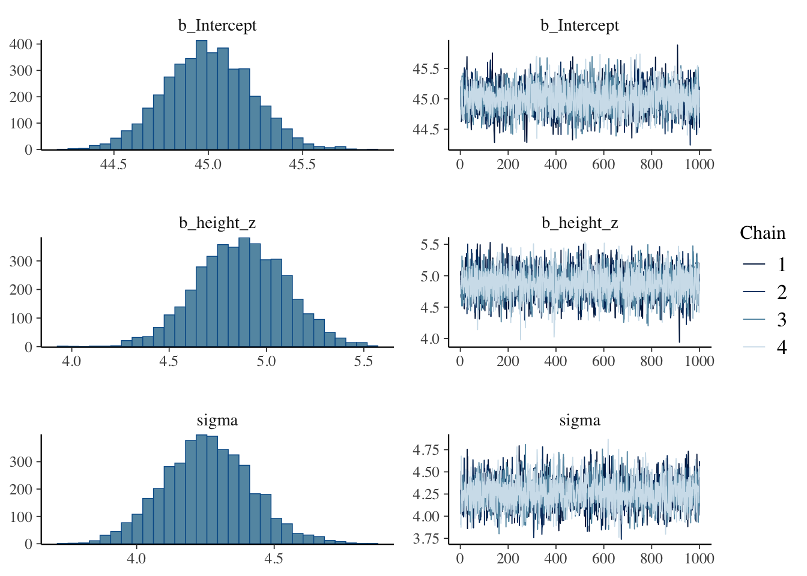
So far the chains look really nice there is great mixing. Everything you would want! However, if we simulate our prior we see an interesting phenomena
sample_prior = first_cut = brm(
weight ~ 1 + height_z,
family = gaussian,
prior = priors,
data = just_adults,
sample_prior = 'only'
)
height_scale <- attributes(just_adults$height_z) %>%
set_names(janitor::make_clean_names(names(.)))
draws_prior <- tibble(height_z = seq((130 - height_scale$scaled_center) / height_scale$scaled_scale,
(170 - height_scale$scaled_center) / height_scale$scaled_scale,
length.out = 1000)) |>
add_epred_draws(sample_prior, ndraws = 1000) |>
mutate(height_unscaled = (height_z * height_scale$scaled_scale) + height_scale$scaled_center)
ggplot(draws_prior, aes(x = height_unscaled, y = .epred, group = .draw)) +
geom_line(alpha = 0.2) +
coord_cartesian(xlim = c(130, 170), ylim = c(10, 100)) +
theme_minimal()This plot looks super wonky we wouldn’t expect that as height increases weight would decrease which seems to be the case for a fair number of cases. What we are seeing is that not out maliciousness we have set up a weird world for our model to calibrate to.
pp_check(sample_prior)If we look a the posterior predictions they look a little weird. We have some draws that go negative implying there are negative weights. To recalibrate our model a bit we need to simply choose a prior that constrains our world a bit more.
priors2 = c(prior(normal(60, 10), class = Intercept),
# here we are actually just constraining
# beta to be positive
prior(lognormal(0, 1), class = b, lb = 0 ),
prior(uniform(0,10), class = sigma, ub = 10))
sample_prior2 = brm(
weight ~ 1 + height_z,
family = gaussian,
prior = priors2,
data = just_adults,
sample_prior = 'only'
)
draws_prior2 <- tibble(height_z = seq((130 - height_scale$scaled_center) / height_scale$scaled_scale,
(170 - height_scale$scaled_center) / height_scale$scaled_scale,
length.out = 1000)) |>
add_epred_draws(sample_prior2, ndraws = 1000) |>
mutate(height_unscaled = (height_z * height_scale$scaled_scale) + height_scale$scaled_center)
ggplot(draws_prior2 ,aes(x = height_unscaled, y = .epred, group = .draw)) +
geom_line(alpha = 0.2) +
theme_minimal()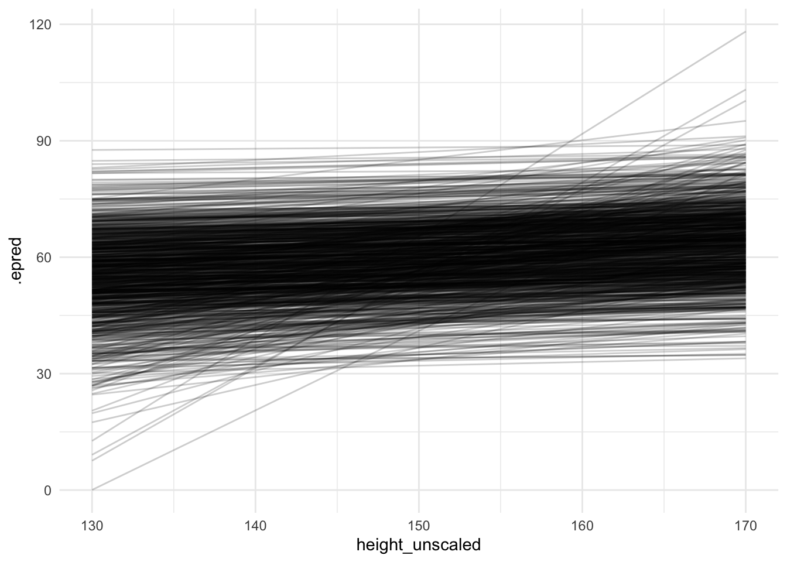
This is definitely a lot better! Out of 1000 draws we get only two weird samples, but that happens. For the most part we can live with this.
pp_check(sample_prior2)This is definitely at least encouraging! We are not getting really really weird predictions. There are definitely some extreme ones in there, but I wouldn’t be like to shocked.
final_model = first_cut = brm(
weight ~ 1 + height_z,
family = gaussian,
prior = priors2,
data = just_adults
)
final_draws = tibble(height_z = seq(min(just_adults$height_z), max(just_adults$height_z), length.out = 500)) |>
add_predicted_draws(final_model, ndraws = 100) |>
mutate(height_unscaled = (height_z * height_scale$scaled_scale) + height_scale$scaled_center)
ggplot(just_adults, aes(x = height, y = weight)) +
geom_point(alpha = 0.5) +
stat_lineribbon(data = final_draws,
aes(x = height_unscaled, y = .prediction), .width = 0.95, alpha = 0.2, inherit.aes = FALSE) +
theme_minimal() +
theme(legend.position = 'none')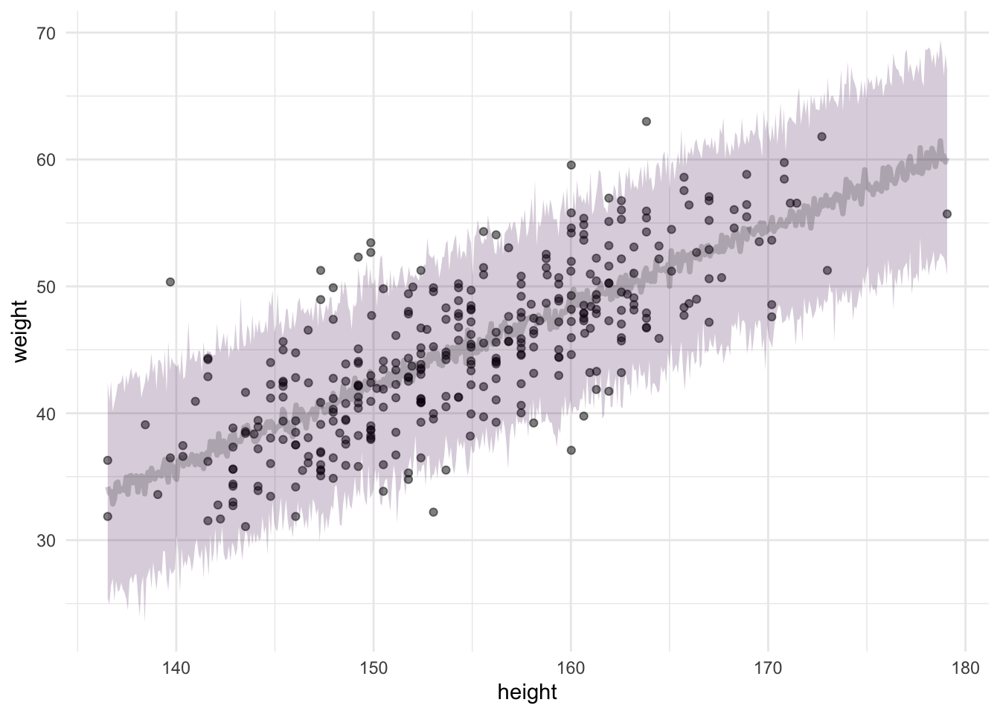
She looks great! What about the posterior predictions?
pp_check(final_model)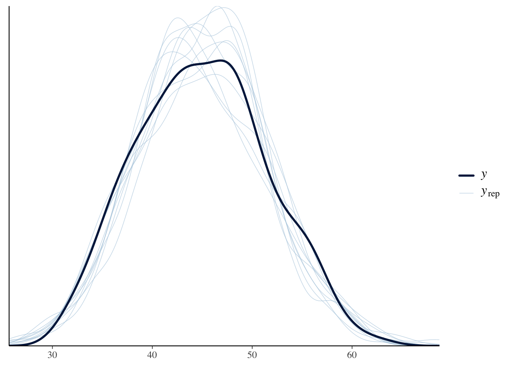
She is beautiful. However if we look at the data
ggplot(just_adults, aes(x = height, y = weight, color = as.factor(male))) +
geom_point() +
theme_minimal()As you would expect we see that there group differences. So if our dag looks like this.
library(ggdag)
library(dagitty)
coords = list(x = c(Height = 0, Sex = 1, Weight = 2),
y = c(Height = 0, Sex = 1, Weight = 0))
labs = c(Height = 'Height', Sex = 'Sex', Weight = 'Weight')
dagify(Weight ~ Height + Sex,
Height ~ Sex,
outcome = 'Weight',
exposure = 'Height',
labels = labs,
coords = coords) |>
ggdag_status(use_labels = 'label', text = FALSE) +
guides(fill = 'none', color = 'none') +
theme_dag()Rich advises using index variables for things we would normally make a factor or an indicator variable. His argument is that this makes it easier to set a prior on each the different levels of the category. What this does is split apply our prior to both levels of sex. If we wanted to get crazy we could actually estimate a multilevel model. Will it outperform a linear model? ¯_(ツ)_/¯. In this case we could create a fairly neutral prior
just_adults = just_adults |>
mutate(sex = factor(male),
height_z = as.numeric(height_z))
sex_priors = c(
# we do be because we are going to specify a model sans intercept
prior(normal(60, 10), class = b),
prior(uniform(0,10), class = sigma, lb = 0, ub = 10)
)
sex_model = brm(weight ~ 0 + sex,
prior = sex_priors,
data = just_adults)
sex_modelNow we have our indicator variables.
sw_post_means = sex_model |>
gather_draws(b_sex0, b_sex1)
ggplot(sw_post_means, aes(x = .value, fill = .variable)) +
stat_halfeye() +
labs(fill = NULL, x = 'Posterior mean weight') +
theme_minimal() +
theme(legend.position = 'bottom')
So we could just subtract the the variables like this.
diffs_manual = sw_post_means |>
pivot_wider(names_from = .variable, values_from = .value) |>
mutate(diff = b_sex1 - b_sex0)
diffs_brms = sex_model |>
spread_draws(b_sex0, b_sex1) |>
mutate(diff = b_sex1 - b_sex0)
tinytest::expect_equal(diffs_brms, diffs_manual)We could also use marginaleffects.
library(marginaleffects)
me_contrasts = get_draws(avg_comparisons(sex_model))
tinytest::expect_equal(me_contrasts$draw, diffs_brms$diff)
ggplot(me_contrasts, aes(x = draw)) +
stat_halfeye() +
labs(x = 'posterior contrasts') +
theme_minimal()We can also get posterior prediced draws with marginal effects via
preds = tibble(sex = c("0", "1")) |>
add_predicted_draws(sex_model, ndraws = 1000)
ggplot(preds, aes(x = .prediction, fill = sex)) +
stat_halfeye() +
theme_minimal() +
theme(legend.position = 'bottom') Just to be sure lets make sure the model makes sense
check_sex_priors = brm(
weight ~ 0 + sex,
prior = sex_priors,
data = just_adults,
sample_prior = 'only'
)
pp_check(check_sex_priors)Ehh it somewhat hard to tell but in all honesty it seems like we are a little bit streching the issue a bit. Now we can use a little parlor trick to avoid some of the the wonky syntax of the nl argument of brms. It will kick a stink but she still works.
priors <- c(prior(normal(60, 10), class = b, coef = 'sex1'),
prior(lognormal(0, 1), class = b, coef = 'sex1:height_z'),
prior(uniform(0, 10), class = sigma, lb = 0, ub = 10))
model_height_sex <- brm(
bf(weight ~ 0 + sex + sex:height_z),
data = just_adults,
family = gaussian(),
prior = priors
)
priors2 <- c(prior(normal(60, 10), class = b, nlpar = a),
prior(lognormal(0, 1), class = b, nlpar = b, lb = 0),
prior(uniform(0, 10), class = sigma, lb = 0, ub = 10))
model_height_sex_wonky =brm(
bf(weight ~ 0 + a + b * height_z,
a ~ 0 + sex,
b ~ 0 + sex,
nl = TRUE),
data = just_adults,
family = gaussian(),
prior = priors2,
chains = 4, cores = 4
)
# model_height_sex
# Regression Coefficients:
# Estimate Est.Error l-95% CI u-95% CI Rhat Bulk_ESS Tail_ESS
# sex0 45.15 0.45 44.27 46.00 1.00 2560 2372
# sex1 45.15 0.46 44.22 46.04 1.00 2734 2716
# sex0:height_z 5.08 0.48 4.14 6.02 1.00 2846 2773
# sex1:height_z 4.65 0.42 3.82 5.47 1.00 2716 2618
# Further Distributional Parameters:
# Estimate Est.Error l-95% CI u-95% CI Rhat Bulk_ESS Tail_ESS
# sigma 4.27 0.16 3.96 4.60 1.00 4054 2961
# model_height_sex_wonky
# Regression Coefficients:
# Estimate Est.Error l-95% CI u-95% CI Rhat Bulk_ESS Tail_ESS
# sex0 45.15 0.45 44.27 46.00 1.00 2560 2372
# sex1 45.15 0.46 44.22 46.04 1.00 2734 2716
# sex0:height_z 5.08 0.48 4.14 6.02 1.00 2846 2773
# sex1:height_z 4.65 0.42 3.82 5.47 1.00 2716 2618
#
# Further Distributional Parameters:
# Estimate Est.Error l-95% CI u-95% CI Rhat Bulk_ESS Tail_ESS
# sigma 4.27 0.16 3.96 4.60 1.00 4054 2961Some of the logic of brms with the posterior is a little weird for me but there is not neccessarily a good comparisions in marginaleffects that I am aware of, but is probably going to be obvious if I just ask Vincent.
sex_height_weight_post_pred <- expand_grid(
height_z = seq(min(just_adults$height_z), max(just_adults$height_z), length.out = 50),
sex = 0:1
) |>
add_predicted_draws(model_height_sex, ndraw = 4000) |>
compare_levels(variable = .prediction, by = sex, comparison = list(c("0", "1"))) |>
mutate(height_unscaled = (height_z * height_scale$scaled_scale) + height_scale$scaled_center)
ggplot(sex_height_weight_post_pred, aes(x = .prediction)) +
stat_halfeye(fill = 'red') +
labs(x = "Posterior mean weight contrast (kg)\nWomen − Men", y = "Density") +
theme_minimal()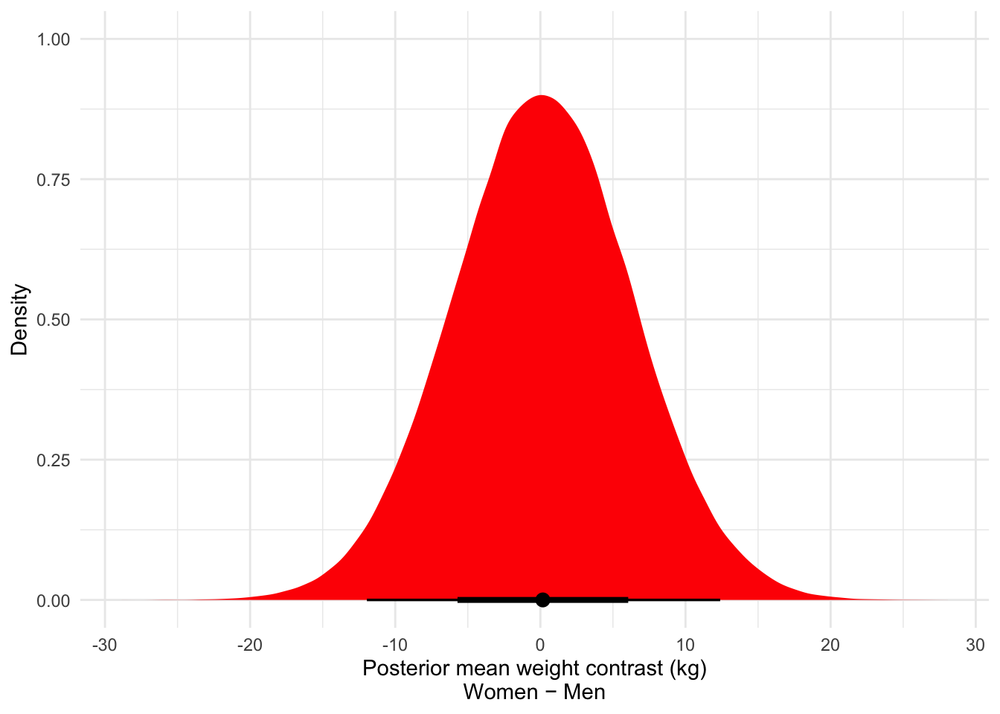
How do we interpret this kind of wonky thing? Well we are really justing talking about the distribution of the predicted differences between men and women’s weight. If we want to talk about the differences meaningfully between two different distributions then we have to take the differences. T
Full Luxury Bayes
Really what we want is one model to represent the entire causal system to get the effect of sex on weight without a ton of additional work. What we are going to do is basically estimate the effect of sex on weight through height. It is a little bit easier to think of the effect of like this.
dagify(Weight ~ Height,
Height ~ Sex) |>
ggdag() +
theme_dag()To do this we have to set our priors accordingly to account for the path through height.
priors <- c(prior(normal(60, 10), resp = weight, class = b, nlpar = a),
prior(lognormal(0, 1), resp = weight, class = b, nlpar = b, lb = 0),
prior(uniform(0, 10), resp = weight, class = sigma, lb = 0, ub = 10),
# prior(normal(160, 10), resp = height, class = b),
prior(normal(0, 1), resp = heightz, class = b),
prior(uniform(0, 10), resp = heightz, class = sigma, lb = 0, ub = 10))
model_luxury <- brm(
bf(weight ~ 0 + a + b * height_z,
a ~ 0 + sex,
b ~ 0 + sex,
nl = TRUE) +
bf(height_z ~ 0 + sex) +
set_rescor(TRUE),
data = just_adults,
family = gaussian(),
prior = priors
)
luxury_post_mean_diff <- expand_grid(
height_z = seq(min(just_adults$height_z), max(just_adults$height_z), length.out = 50),
sex = 0:1
) |>
add_epred_draws(model_luxury) |>
compare_levels(variable = .epred, by = sex, comparison = list(c("1", "0")))
luxury_post_mean_diff |>
filter(.category == "weight") |>
ggplot(aes(x = .epred)) +
stat_halfeye(fill = 'pink') +
labs(x = "Posterior mean weight contrast (kg)\nWomen − Men", y = "Density") +
theme_minimal()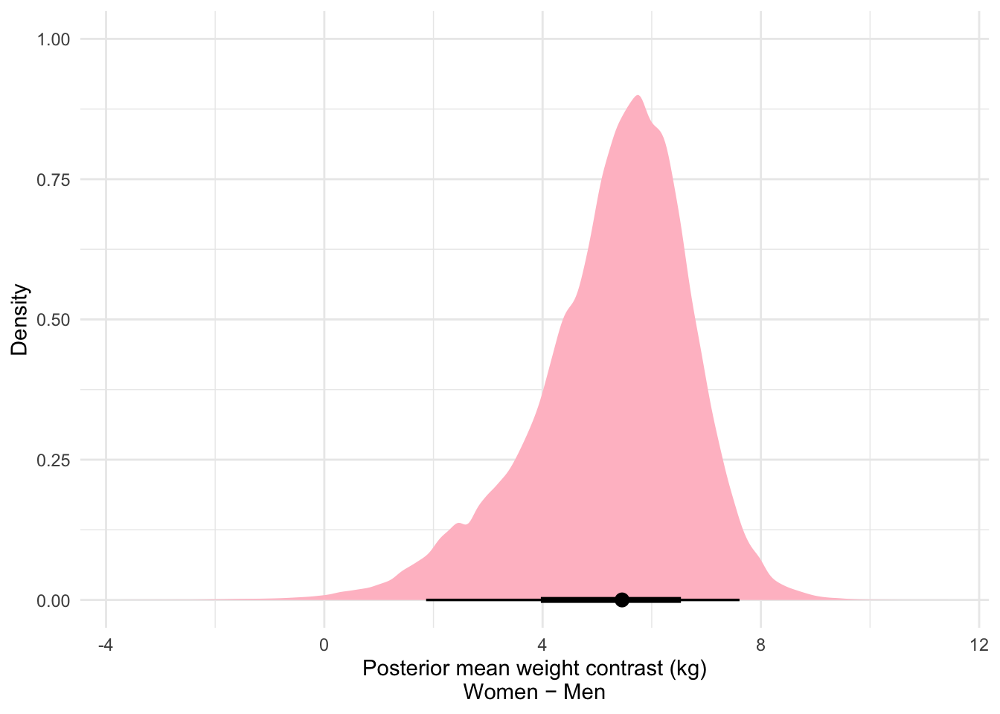
An Aside on the add_foo_draws Family
Brms has lots of ways to draw predictions from the posterior distribution! This is great, but they are a little bit different in subtle ways that can make it a hard to grasp at first. As with lots of things we are just going to follow an excellent Andrew Heiss blog post to understand the differences.
Code
library(palmerpenguins)
library(scales)
library(patchwork)
library(ggtext)
theme_pred <- function() {
theme_minimal(base_family = "Roboto Condensed") +
theme(panel.grid.minor = element_blank(),
plot.background = element_rect(fill = "white", color = NA),
plot.title = element_text(face = "bold"),
strip.text = element_text(face = "bold"),
strip.background = element_rect(fill = "grey80", color = NA),
axis.title.x = element_text(hjust = 0),
axis.title.y = element_text(hjust = 0),
legend.title = element_text(face = "bold"))
}
theme_pred_dist <- function() {
theme_pred() +
theme(plot.title = element_markdown(family = "Roboto Condensed", face = "plain"),
plot.subtitle = element_text(family = "Roboto Mono", size = rel(0.9), hjust = 0),
axis.text.y = element_blank(),
panel.grid.major.y = element_blank(),
panel.grid.minor.y = element_blank())
}
theme_pred_range <- function() {
theme_pred() +
theme(plot.title = element_markdown(family = "Roboto Condensed", face = "plain"),
plot.subtitle = element_text(family = "Roboto Mono", size = rel(0.9), hjust = 0),
panel.grid.minor.y = element_blank())
}
clrs <- MetBrewer::met.brewer("Java")
penguins = penguins |>
drop_na(sex) |>
mutate(is_gentoo = species == "Gentoo") |>
mutate(bill_ratio = bill_depth_mm / bill_length_mm)
model_normal <- brm(
bf(body_mass_g ~ flipper_length_mm),
family = gaussian(),
data = penguins
)
penguins_avg_flipper <- penguins |>
summarize(flipper_length_mm = mean(flipper_length_mm))
# Extract different types of posteriors
normal_linpred <- model_normal |>
linpred_draws(newdata = penguins_avg_flipper)
normal_epred <- model_normal |>
epred_draws(newdata = penguins_avg_flipper)
normal_predicted <- model_normal |>
predicted_draws(newdata = penguins_avg_flipper,
seed = 12345)
p1 <- ggplot(normal_linpred, aes(x = .linpred)) +
stat_halfeye(fill = clrs[3]) +
scale_x_continuous(labels = label_comma()) +
coord_cartesian(xlim = c(4100, 4300)) +
labs(x = "Body mass (g)", y = NULL,
title = "**Linear predictor** <span style='font-size: 14px;'>*µ* in the model</span>",
subtitle = "posterior_linpred(..., tibble(flipper_length_mm = 201))") +
theme_pred_dist() +
theme(plot.title = element_markdown())
p2 <- ggplot(normal_epred, aes(x = .epred)) +
stat_halfeye(fill = clrs[2]) +
scale_x_continuous(labels = label_comma()) +
coord_cartesian(xlim = c(4100, 4300)) +
labs(x = "Body mass (g)", y = NULL,
title = "**Expectation of the posterior** <span style='font-size: 14px;'>E[*y*] and *µ* in the model</span>",
subtitle = "posterior_epred(..., tibble(flipper_length_mm = 201))") +
theme_pred_dist()
p3 <- ggplot(normal_predicted, aes(x = .prediction)) +
stat_halfeye(fill = clrs[1]) +
scale_x_continuous(labels = label_comma()) +
coord_cartesian(xlim = c(2900, 5500)) +
labs(x = "Body mass (g)", y = NULL,
title = "**Posterior predictions** <span style='font-size: 14px;'>Random draws from posterior Normal(*µ*, *σ*)</span>",
subtitle = "posterior_predict(..., tibble(flipper_length_mm = 201))") +
theme_pred_dist()
(p1 / plot_spacer() / p2 / plot_spacer() / p3) +
plot_layout(heights = c(0.3, 0.05, 0.3, 0.05, 0.3))So both posterior_linpred and posterior_epred are lookig at the \(\mu\) part of the model or effectively
\[ \mu = \alpha + \beta\text{Flipper Length} \]
For posterior_linpred what we are doing are we going to take the individual predictions from our model, the intercept and multiply them by the average flipper length.
linear_predictions_manual = model_normal |>
spread_draws(b_Intercept, b_flipper_length_mm) |>
mutate(mu = b_Intercept +
(b_flipper_length_mm * penguins_avg_flipper$flipper_length_mm))
tinytest::expect_equal(linear_predictions_manual$mu, normal_linpred$.linpred)Really importanly what you will notice is that we don’t incorporate any inforamtion from \(\sigma\) or the posterior or the part of the model that remains uncertain after modeling the outcome. As you might imagine that may have a some important implications on what the predictions from the posterior look like!
posterior_predict uses this sigma term to effectively take samples from the normal around the mu with the sigma as a standard deviation. So the only thing we change in our code, is this
postpred_manual = model_normal |>
spread_draws(b_Intercept, b_flipper_length_mm, sigma) |>
mutate(mu = b_Intercept +
(b_flipper_length_mm * penguins_avg_flipper$flipper_length_mm),
predictions = rnorm(n(), mu, sigma))
tinytest::expect_equal(postpred_manual$predictions, normal_predicted$.prediction)That makes sense since we are taking some samples. However, if we plot them they are going to look the same.
manual = ggplot(postpred_manual, aes(x = predictions)) +
stat_halfeye(fill = 'hotpink') +
labs(title = "**Posterior predictions** <span style='font-size: 14px;'>Random draws from posterior Normal(*µ*, *σ*)</span>", subtitle = "rnorm(b_Intercept + (b_flipper_length_mm * 201), sigma)") +
theme_pred_dist() +
theme(plot.title = element_markdown())
manual /p3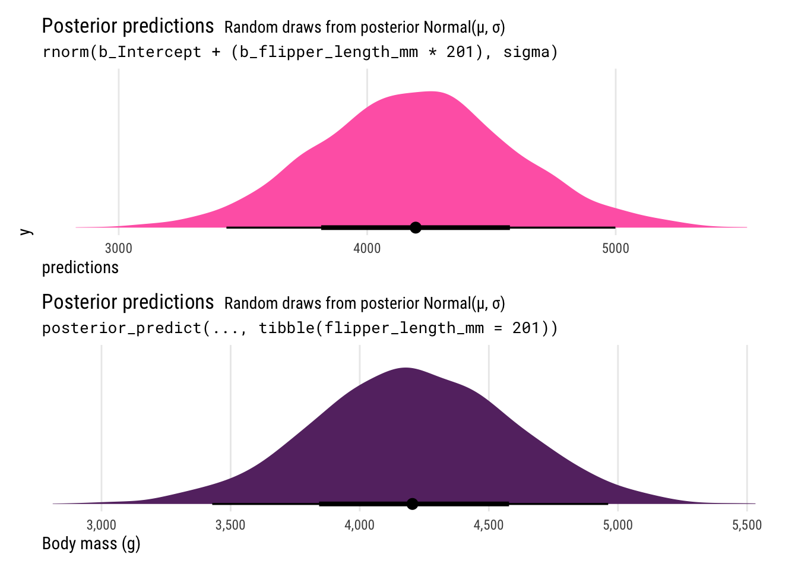
Since we are incorporating the remaining uncertainty from the model we are going to have a little bit of a larger spread.
epreds is a little weird. In many cases they can be the same as the linear predcitons. In fact if we did epredswe would get just get the linear predicitions returned back to us. epreds is short for Expected predicitions. This will combine the E[y] and \(\mu\). Thankfully we have a really easy case to look at
logit_mod = brm(
is_gentoo ~ flipper_length_mm,
family = bernoulli(link = 'logit'),
data = penguins
)
epreds_logit = logit_mod |>
epred_draws(newdata = penguins_avg_flipper)
linear_pres_logit = logit_mod |>
linpred_draws(newdata = penguins_avg_flipper)
epreds_logit_plot = ggplot(epreds_logit, aes(x = .epred)) +
stat_halfeye() +
labs(title = 'Expected Predictions') +
theme_minimal()
logit_linpreds = ggplot(linear_pres_logit, aes(x = .linpred)) +
stat_halfeye() +
labs(title = 'Linear Predicitions')+
theme_minimal()
epreds_logit_plot/logit_linpredsThese are super different! In this case epreds is going to take the predictions on the probability scale while linpreds is going to use the logit scales or the log odds scale(ewww). One of the things about epreds is it will shift a lot. For a beta regression the expectation will effectively be the average of the posterior’s average.
Working with exponetials and Stratifying by Continous variables
When we adjust for a continous variable we are going adjust for the actual values of the continous variables and the slope because every value produces a different relationshiop between the treatment and the ouctcome. Scaling helps because we can think of big effects in terms of the mean and the sd.
data('WaffleDivorce', package = 'rethinking')
waffle_clean = WaffleDivorce |>
janitor::clean_names() |>
mutate(across(c(marriage, divorce, median_age_marriage), \(x) scale(x), .names = "{col}_scaled")) |>
mutate(across(c(marriage, divorce, median_age_marriage), \(x) as.numeric(scale(x)), .names = "{col}_z"))
waffle_priors = c(
prior(normal(0, 0.2), class = Intercept),
prior(normal(0, 0.5), class = b, coef = 'median_age_marriage_z'),
prior(normal(0,0.5), class = b, coef = 'marriage_z'),
prior(exponential(1), class = sigma))
scaled_waffles = brm(
divorce_z ~ marriage_z + median_age_marriage_z,
data = waffle_clean,
prior = waffle_priors,
sample_prior = 'only'
)
# range(waffle_clean$median_age_marriage_z)
check_priors = tibble(median_age_marriage_z = seq(-3, 3),
marriage_z = 0) |>
add_epred_draws(scaled_waffles, ndraws = 100)
ggplot(check_priors, aes(x = median_age_marriage_z, y = .epred, group = .draw)) +
geom_line(alpha = 0.5)These are some of the implied regression lines from the model. For the most part we some pretty plausible regression lines. We have some weird ones where as the age of marriage increases the divorce rate decreases. Other regression lines we have mostly flat which I guess would make sense since we are not stratifying by state. We can then go ahead and estimate the model. I will spare myself the tedium of specifying two models. Instead we will estimate the effect of age of marriage through marriage rate. I suppose I didn’t explain it when I did it earlier because I was getting to angry at getting the : syntax to work correctly.
So the idea is that we really have two models. The effect of Age on Divorce and the effect of Age on marriage. So we have to tell brms how do to this because simply doing
brm(divorce_z ~ marriage_z + age_z, data = d)Would just adjust for the age of marriage in our model. This is great if we are only interested in the effect of marriage rate on divorce but is not our stated goal. There are lots of ways to invoke this in brms. I will probably just separate these into two different objects just for ease of reading.
waffle_priors_two = c(
prior(normal(0, 0.2), class = Intercept, resp = divorcez),
prior(normal(0, 0.5), class = b, coef = 'median_age_marriage_z', resp = divorcez),
prior(normal(0,0.5), class = b, coef = 'marriage_z', resp = divorcez),
prior(exponential(1), class = sigma, resp = divorcez),
prior(normal(0, 0.2), class = Intercept, resp = marriagez),
prior(normal(0, 0.5), class = b, coef = 'median_age_marriage_z', resp = marriagez),
prior(exponential(1), class = sigma, resp = marriagez))Since we technically have two regression models smooshed together we have to add priors for this model as well. To make sure brms doesn’t get mad at us we feed just use resp to tell it what equation the prior is for. We could obviously change the prior around age of marriage. This could get super complicated if we needed it, but for now we are gonna k.i.s.s.
In the gender example that we worked on earlier we did set_rescor(TRUE) which is going to allow correlation betwee the two different equations. This makes sense because we are making the assumption that there are probably other factors that influence this relationship that we don’t observe. In our waffle divorce model we would also want to include the effect of region/state. But in our DAG we don’t include it for pedagogical purposes
divorce_model = bf(divorce_z ~ median_age_marriage_z + marriage_z)
marriage_rate_model = bf(marriage_z ~ median_age_marriage_z)
conflicted::conflict_prefer('stanfit', 'rstan')
full_luxury_model = brm(
divorce_model + marriage_rate_model + set_rescor(FALSE),
prior = waffle_priors_two,
data = waffle_clean,
cores = 4
)Whats cool about this approach is we have modeled a few effects. We can get the effect of age on divorce and age on marriage rate. All we need to do is extract the predictions from the posterior and set the correct response variable.
divorce_predictions = tibble(median_age_marriage_z = seq(-2, 2, length.out = 40 ),
# make sure we don't use a grid of marriage rates
marriage_z = 0) |>
add_predicted_draws(full_luxury_model, resp = 'divorcez')
marriage_predictions = tibble(median_age_marriage_z = seq(-2, 2, length.out = 40 )) |>
add_predicted_draws(full_luxury_model, resp = 'marriagez')Regularization and Cross-Validation in Bayesian Models
Regularization in Bayes works a bit differently then in frequentism/machine learning. Instead of simply adding a penalty term to the sum of the squared residuals we can impose some what ‘stronger weakly informative priors’ or there are priors that are kid of just used for regularization. To pick a model that performs well we should probably have an idea about how to pick a good model.
A good model is one that balances good fit with flexibility to incorporate new data and describes the world realistically. This is probably the most straightforward way to describe the bias variance tradeoff. We will use the example from the book of brain size vs body mass
# getting tired of + theme_minmal
theme_set(theme_minimal())
d <-
tibble(species = c("afarensis", "africanus", "habilis", "boisei", "rudolfensis", "ergaster", "sapiens"),
brain = c(438, 452, 612, 521, 752, 871, 1350),
mass = c(37.0, 35.5, 34.5, 41.5, 55.5, 61.0, 53.5))
ggplot(d, aes(x = mass, y = brain)) +
geom_point()This will also be a useful way to learn how to use the update function. We are standardizing the variables becaus
d = d |>
mutate(mass_std = (mass - mean(mass)) / sd(mass),
brain_std = brain / max(brain))
brain_model_priors = c(
prior(normal(0.5, 1), class = Intercept),
prior(normal(0,10), class = b),
prior(lognormal(0,1), class = sigma))
brain_model = brm(
brain_std ~ mass_std,
prior = brain_model_priors,
data = d,
file = 'fits/brain_model',
chains = 4, cores = 4
)
brain_sqr = update(
brain_model,
newdata = d,
brain_std ~ mass_std + I(mass_std^2),
chains =4, cores =4,
file = 'fits/brain_model_sqr'
)
brain_cubed = update(
brain_model,
newdata = d,
formula = brain_std ~ mass_std + I(mass_std^2) + I(mass_std^3) + I(mass_std^4),
iter = 2000, warmup = 1000, chains = 4, cores = 4,
seed = 7,
control = list(adapt_delta = .995)
)I am less dedicated (to this excerise than Soloman Kurz)[https://bookdown.org/content/4857/ulysses-compass.html#the-problem-with-parameters] so I am not going to go through the trouble of messing with stan directly. But we can see the logic of what is going on
brain_loo_lins =\(mod, ylim = range(d$brain_std)){
nd <- tibble(mass_std = seq(from = -2, to = 2, length.out = 200))
# simulate and wrangle
fitted(mod, newdata = nd, probs = c(.055, .945)) |>
data.frame() |>
bind_cols(nd) |>
# plot!
ggplot(aes(x = mass_std)) +
geom_lineribbon(aes(y = Estimate, ymin = Q5.5, ymax = Q94.5)) +
geom_point(data = d,
aes(y = brain_std)) +
labs(
x = "body mass (std)",
y = "brain volume (std)") +
coord_cartesian(xlim = c(-1.2, 1.5),
ylim = c(0.3, 1.0))
}
mod_list = list(brain_model, brain_sqr, brain_cubed)
plots = purrr::map(mod_list, \(x) brain_loo_lins(x))
wrap_plots(plots, ncol =1)Obviously fitting a bunch of terms to like 4 data points is not an ideal way to model data. But this kind of mimics how we do a lot of stats in data science. One way to can shrink our estimates is to use regularization. To do this we can just set a more restrictive prior.
dat = tibble(x = seq(from = - 3.5, to = 3.5, by = 0.01)) |>
mutate(a = dnorm(x, mean = 0, sd = 0.2),
b = dnorm(x, mean = 0, sd = 0.5),
c = dnorm(x, mean = 0, sd = 1.0)) |>
pivot_longer(-x)
ggplot(dat, aes(x = x, y = value, color = name, fill = name)) +
geom_area(alpha = 0.4, linewidth = 0.5, position = 'identity') +
theme(legend.position = 'none')What is really strange if you are coming from a pure machine learning background is that we don’t neccesasrily need to implement a pure version of Ridge regression in Bayes. We can simply place more restrictive priors on the model using the good old fashion \(\beta \approx N(0,1)\) or placing a Laplace prior on the coefficients to achieve the same effect.
n_sim <- 1e3
kseq <- 1:5
make_sim <- function(n, b_sigma) {
sapply(kseq, function(k) {
print(k);
r <- replicate(n_sim, rethinking::sim_train_test(N = n, k = k, b_sigma = b_sigma));c(mean(r[1, ]), mean(r[2, ]), stats::sd(r[1, ]), stats::sd(r[2, ]))
}
) |>
# this is a new line of code
data.frame()
}
s <-
crossing(n = c(20, 100),
b_sigma = c(1, 0.5, 0.2)) |>
mutate(sim = map2(n, b_sigma, make_sim)) |>
unnest(sim)
n_sim <- 1e3
n_cores <- 8
kseq <- 1:5
# define the simulation function
my_sim <- function(k) {
print(k);
r <- replicate(n_sim, rethinking::sim_train_test(N = n, k = k));
c(mean(r[1, ]), mean(r[2, ]), stats::sd(r[1, ]), stats::sd(r[2, ]))
}
# here's our dev object based on `N <- 20`
n <- 20
dev_20 <-
sapply(kseq, my_sim)
# here's our dev object based on N <- 100
n <- 100
dev_100 <-
sapply(kseq, my_sim)
dev_tibble <-
rbind(dev_20, dev_100) |>
data.frame() |>
mutate(statistic = rep(c("mean", "sd"), each = 2) |> rep(x = _, times = 2),
sample = rep(c("in", "out"), times = 2) |> rep( x = _, times = 2),
n = rep(c("n = 20", "n = 100"), each = 4)) |>
pivot_longer(-(statistic:n)) |>
pivot_wider(names_from = statistic, values_from = value) |>
mutate(n = factor(n, levels = c("n = 20", "n = 100")),
npar = str_extract(name, "\\d+") |> as.double()) |>
mutate(npar = ifelse(sample == "in", npar - .075, npar + .075))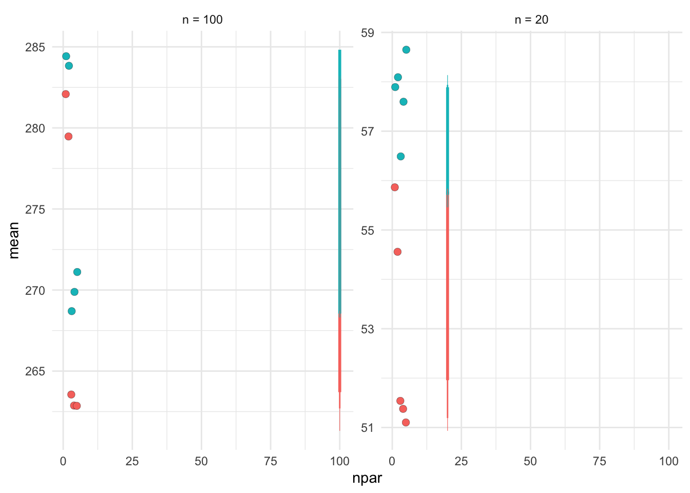
The argument that Rich makes is that regularization is often a bit skeptical in Bayesian statistics. The priors are bit harder to tune. In frequentist statistics we search a large number of very small values of the hyperparameter. This can take a fair amount of time. Now think about searching through the posterior distribution for a ton of different models for the ideal prior. This can take a long time. However, there are a lot of work going into regularization priors since we use them for BART and other estimation methods.
Taming Markov Chains
All the core algorithms have different ways to sample from the posterior. Stan uses a Hamiltonian Monte Carlo (HMC)
library(animation)
myU2 <- function( q , a=0 , b=1 , k=0 , d=0.5 ) {
s <- exp(q[2]) # sigma on log latent scale
mu <- q[1]
U <- sum( dnorm(y,mu,s,log=TRUE) ) + dnorm(mu,a,b,log=TRUE) + dnorm(q[2],k,d,log=TRUE)
return( -U )
}
# gradient function
# need vector of partial derivatives of U with respect to vector q
myU_grad2 <- function( q , a=0 , b=1 , k=0 , d=0.5 ) {
mu <- q[1]
s <- exp(q[2])
G1 <- sum( y - mu ) * exp(-2*q[2]) + (a - mu)/b^2 #dU/dmu
G2 <- sum( (y - mu)^2 ) * exp(-2*q[2]) - length(y) + (k-q[2])/d^2 #dU/ds
return( c( -G1 , -G2 ) ) # negative bc energy is neg-log-prob
}
# test data
set.seed(7)
y <- abs(rnorm(50))
y <- c( y , -y ) # ensure mean is zero
###########
# example paths
library(shape) # for good arrow heads
# blank(bty="n")
# priors
priors <- list()
priors$a <- 0
priors$b <- 1
priors$k <- 0
priors$d <- 0.3
#ss <- ss + 1
set.seed(42) # seed 9 for examples
# init
n_samples <- 4
Q <- list()
Q$q <- c(-0.4,0.2)
xr <- c(-0.6,0.6)
yr <- c(-0.25,0.4)
step <- 0.02
L <- 12 # 0.02/12 okay sampling --- 0.02/20 is good for showing u-turns
xpos <- c(4,2,1,2) # for L=20
#xpos <- c(2,3,2,1) # for L=55
path_col <- col.alpha("black",0.5)
draw_bg <- function() {
plot( NULL , ylab="log_sigma" , xlab="mu" , xlim=xr , ylim=yr )
# draw contour of log-prob
cb <- 0.2
mu_seq <- seq(from=xr[1]-cb,to=xr[2]+cb,length.out=50)
logsigma_seq <- seq(from=yr[1]-cb,to=yr[2]+cb,length.out=50)
z <- matrix(NA,length(mu_seq),length(logsigma_seq))
for ( i in 1:length(mu_seq) )
for ( j in 1:length(logsigma_seq) )
z[i,j] <- myU2( c( mu_seq[i] , logsigma_seq[j] ) , a=priors$a , b=priors$b , k=priors$k , d=priors$d )
cl <- contourLines( mu_seq , logsigma_seq , z , nlevels=30 )
for ( i in 1:length(cl) ) lines( cl[[i]]$x , cl[[i]]$y , col=col.alpha("black",0.5) , lwd=1 )
}
Q <- list()
Q$q <- c(-0.4,0.2) # start point
xr <- c(-0.4,0.4) # x range in plot
yr <- c(-0.25,0.3) # y range in plot
draw_bg()
n_samples <- 10
# points( Q$q[1] , Q$q[2] , pch=4 , col="black" )
pts <- matrix(NA,nrow=n_samples,ncol=3)
for ( i in 1:n_samples ) {
Q <- HMC2( myU2 , myU_grad2 , step , L , Q$q , a=priors$a , b=priors$b , k=priors$k , d=priors$d )
draw_bg()
# draw previous points
if ( i > 1 ) {
for ( j in 1:(i-1) ) {
V <- 0.9
points( pts[j,1] , pts[j,2] , pch=ifelse( pts[j,3]==1 , 1 , 16 ) , col=grau(V) , lwd=2 )
}
}
# draw trajectory
for ( l in 1:L ) {
lines( Q$traj[l:(l+1),1] , Q$traj[l:(l+1),2] , col="white" , lwd=8 )
lines( Q$traj[l:(l+1),1] , Q$traj[l:(l+1),2] , col=4 , lwd=5 )
ani.record()
}
#points( Q$traj[2:L+1,] , pch=16 , col="white" , cex=0.3 )
# draw new point
pts[i,1:2] <- Q$traj[L+1,]
pts[i,3] <- Q$accept
#Arrows( Q$traj[L,1] , Q$traj[L,2] , Q$traj[L+1,1] , Q$traj[L+1,2] , arr.length=0.3 , arr.adj = 0.7 , col=4 )
#text( Q$traj[L+1,1] , Q$traj[L+1,2] , i , cex=1.2 , pos=1 , offset=0.4 )
points( Q$traj[L+1,1] , Q$traj[L+1,2] , pch=ifelse( Q$accept==1 , 1 , 16 ) , col=ifelse( Q$accept==1 , 4 , 2 ) , lwd=2 )
invisible( replicate( 3 , ani.record() ) )
}In a way we are effectively just using gradient descent to get our posterior. What we are doing is just throwing a marble into a bowl with n-dimensions and then just recording where it lands. Since it is a bowl the marble is going to end towards the center of the bowl. We are going to use step size to tell our arm how hard to throw the marble. In gradient descent we really just use these throws to give the marble a hint what path would be faster to minimize a loss function.
In two or three dimensions this is hard when we start adding in the complexities of sampling from a huge dimensional space lots of problems can arise. As stated early on problems with computing or divergent chains are some indicators that our model may not be working all that well. When taming our markov chains it can help to set more informative priors. Even Stan doesn’t get mad at you its important to inspect the health of the markov chains. To make this easier on ourselves lets just simulate a model.
data('Wines2012', package = 'rethinking')
wine_clean = Wines2012 |>
mutate(score_z = scale(score),
wine = as.numeric(wine))
priors = c(
prior(normal(0,1), class = b, coef = 'wine'),
prior(exponential(1), class = sigma)
)
wine_score_model = brm(score_z ~ 0 + wine,
prior = priors,
data = wine_clean)
plot(wine_score_model)Trace Plots
Most of the libraries have some built in method of trace plots. Visual diagnostics of MCMC chains tend towards the idea of ‘this looks like a jumbly mess’ so when it looks like a random mess that is good.
library(MetBrewer)
manual_trace_data = as_draws_df(wine_score_model)
ggplot(manual_trace_data, aes(x = .iteration, y = b_wine, color = as.factor(.chain))) +
geom_line(alpha = 0.5) +
scale_color_met_d(name = 'Lakota')This is kind of what you want it should look like lots of random lines. Lets make some bad priors to see what happens
priors_bad = c(
prior(lognormal(0,10), class = b, coef = 'wine'),
prior(exponential(4), class = sigma)
)
bad_wine_score_model = brm(score_z ~ 0 + wine,
prior = priors_bad,
data = wine_clean)
bad_chains = as_draws_df(bad_wine_score_model)
ggplot(bad_chains, aes(x = .iteration, y = b_wine,
color = as.factor(.chain),
group = as.factor(.chain))) +
geom_line() +
scale_color_met_d(name = 'Lakota')I played up the priors a big but as you can see these chains are really bad. We have what looks to be clear trends in the first and fourth chains. We cahn’t really even see the second and third chain. Overall this is a mess.
Trace Rank Plots (Trank Plots)
We can also use rank orders to get a sense of the health of the chains. Basically no chain should consistently look the best. They should look like some jumbled up mess.
as_draws_df(bad_wine_score_model) |>
bayesplot::mcmc_rank_overlay()As you can see it looks like a few chains are actually broken while others just seem to be doing bettter than others. Good trank plots look more like this:
as_draws_df(wine_score_model) |>
bayesplot::mcmc_rank_overlay() +
scale_y_continuous(limits = c(30,65)) +
scale_color_met_d(name = 'Lakota')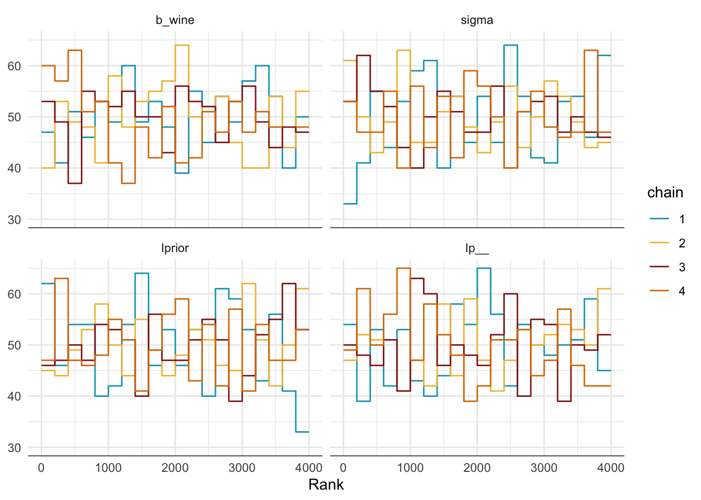
where no one chain consistently outranks any other chain consistently.
Numeric diagnositcs
\(\hat{R}\)
When chains converge the end of the chain and the beggining of a chain are exploring the same region. Independent chains explore the same or similar region. \(\hat{R}\) is effectively a ratio of variances so we can think of it as
\[ \hat{R} = \frac{\text{Within Chain Variance}}{\text{Total Variance of All Chains}} \]
In practice this means that values closer to give us some indication of how well are chains are doing. Values like 1.01 could tell us that we just need to run the chains for longer or that we need to go back and rethink our priors.
n_eff or Number of Effective Samples
This is an estimate of the number of effective samples what this is kind of telling us is that
Important
How long would the chain be if each sample was independent of the one before it
McElreath argues that we can think of rnorm as the ideal behavior of n_eff where each draw from a normal distribution is independent of the one before it. So our number of n_eff would be equal to what ever you feed the n argument. The same idea applies to n_eff where we are going to get some number that is generally less than the number of samples we are taking, but sometimes Stan will find places where we can grow the length of the chain. This is not a bug because, well, when we are traversing multidimensional spaces we are not going to be as clever about that as some may think. We would see the number off effective samples shrink if we had autocorrelation because past values of the variables are giving us more information about the variable we are modeling so the length of the chain will be much shorter. The toy bad model
A toy exmaple
summary(bad_wine_score_model)As we can see in the basd wine model we have really really short chains and Rhat values that tell us that the chains aren’t mixing all that well! When we made the trace plot we saw that some chains were actually broken so the short length of chains make a ton of sense. When we compare this to a good model the difference is pretty stark
summary(wine_score_model)The Folk Theorum of Statistical Computing
Often times when we have computational problems with our model we have issues with our scientific problems with our model. Calculating the posterior is hard thats why the racist Sir Ronald Fisher was a coward and took the log of the likelihood. When we are first building a model we will often have problems getting the chains to work well because our assumptions about the world get passsed onto our model. The trouble that we are having sampling from the posterior distribution maybe because it doesn’t make any sense.
Building an Interaction in brms
We often have conditional hypothesis especially in the social sciences. Political science in particular uses a lot of interaction terms. Some of our most cited statistics articles are interaction terms. Importanly for multilevel models we often times have interactions with lots of factors. Inidividuals are going to interact with where they are from or what party they identify with.
data('rugged', package = 'rethinking')
rugged = rugged |>
drop_na(rgdppc_2000) |>
mutate(log_gdp = log(rgdppc_2000),
log_gdp_z = log_gdp/mean(log_gdp),
rugged_std = rugged/max(rugged),
rugged_std_c = rugged_std - mean(rugged_std))Lets take a crack at it with some bad priors
priors_first_cut = c(
prior(normal(1, 1), class = Intercept),
prior(normal(0,1), class = b),
prior(exponential(1), class = sigma))
check_priors = brm(
log_gdp_z ~ rugged_std_c,
data = rugged,
prior = priors_first_cut,
sample_prior = 'only'
)
priors_dat = tibble(rugged_std_c = seq(-2,2)) |>
add_linpred_draws(check_priors, ndraws = 100) |>
mutate(unscaled_rugged = rugged_std_c + mean(rugged$rugged_std))
ggplot(priors_dat, aes(x = unscaled_rugged, y = .linpred, group = .draw)) +
geom_line() +
coord_cartesian(xlim = c(0, 1),
ylim = c(0.5, 1.5))Here we are getting some pretty crazy looking regression lines when we move back to the unscaled version. By scaling things we can make lots of priors look pretty reasonable but when we put them back on the og scale we are going to run into some issues.
Lets constrain the priors a bit more to the defaultish values Rich suggests
priors_rich = c(
prior(normal(1, 0.1), class = Intercept),
prior(normal(0,0.5), class = b),
prior(exponential(1), class = sigma))
check_priors = brm(
log_gdp_z ~ rugged_std_c,
data = rugged,
prior = priors_rich,
sample_prior = 'only'
)
priors_dat = tibble(rugged_std_c = seq(-2,2)) |>
add_linpred_draws(check_priors, ndraws = 100) |>
mutate(unscaled_rugged = rugged_std_c + mean(rugged$rugged_std))
ggplot(priors_dat, aes(x = unscaled_rugged, y = .linpred, group = .draw)) +
geom_line() +
coord_cartesian(xlim = c(0, 1),
ylim = c(0.5, 1.5))Here we are getting slightly more plausible lines but we still have more than our fair share of weird worlds. We could make it a little bit better by tuning the prior a bit more.
priors_rich = c(
prior(normal(1, 0.1), class = Intercept),
prior(normal(0,0.3), class = b),
prior(exponential(1), class = sigma))
check_priors = brm(
log_gdp_z ~ rugged_std_c,
data = rugged,
prior = priors_rich,
sample_prior = 'only'
)
priors_dat = tibble(rugged_std_c = seq(-2,2)) |>
add_linpred_draws(check_priors, ndraws = 100) |>
mutate(unscaled_rugged = rugged_std_c + mean(rugged$rugged_std))
ggplot(priors_dat, aes(x = unscaled_rugged, y = .linpred, group = .draw)) +
geom_line() +
coord_cartesian(xlim = c(0, 1),
ylim = c(0.5, 1.5))
Cool now we just need to add an interaction with Rich’s index approach. Now we can add the priors to each of the ‘intercept terms’. The annoying part is that the nlpar are really just place holders where we are going to set priors for each level of the interaction. This would be fine but for now this would be incredibly annoying.
rugged = rugged |>
mutate(cid = ifelse(cont_africa == 1, '1', '2'))
int_priors = c(prior(normal(1, 0.1), class = b, coef = cid1, nlpar = a),
prior(normal(1, 0.1), class = b, coef = cid2, nlpar = a),
prior(normal(0, 0.3), class = b, coef = cid1, nlpar = b),
prior(normal(0, 0.3), class = b, coef = cid2, nlpar = b),
prior(exponential(1), class = sigma))
int_model_binary = brm(
bf(log_gdp_z ~ 0 + a + b * rugged_std_c,
a ~ 0 + cid,
b ~ 0 + cid,
nl = TRUE),
data = rugged,
prior = int_priors)I have never directly interpreted an interaction term in my life and have been told never too. So I am just going to run it through marginaleffects.
prds = predictions(int_model_binary,
newdata = datagrid(cid = c('1', '2'),
rugged_std_c = mean))
preds_plot = get_draws(prds) |>
transform(type = 'response') |>
mutate(cid = ifelse(cid == '1', 'Africa', 'Not Africa'))
ggplot(preds_plot, aes(x = draw, fill = cid)) +
stat_halfeye() +
scale_fill_met_d('Lakota') +
labs(y = 'Density', x = 'Predicted Values of Log GDP')Here are computing predictions across each level of our binary indicator while holding ruggedness at its mean value. Here we are seeing that the predictionns for continents outside of Africa cluster around above one indicating we would have above average GDP per capita when ruggedness is held at its mean values. This is a little bit weird to think about since we don’t really have a good intuition about the values of the data.
unscaled = preds_plot |>
mutate(draw = exp(draw * mean(rugged$log_gdp)))
ggplot(unscaled, aes(x = draw, fill = cid)) +
stat_halfeye() +
scale_fill_met_d('Lakota') +
labs(y = 'Density', x = 'Predicted Values GDP')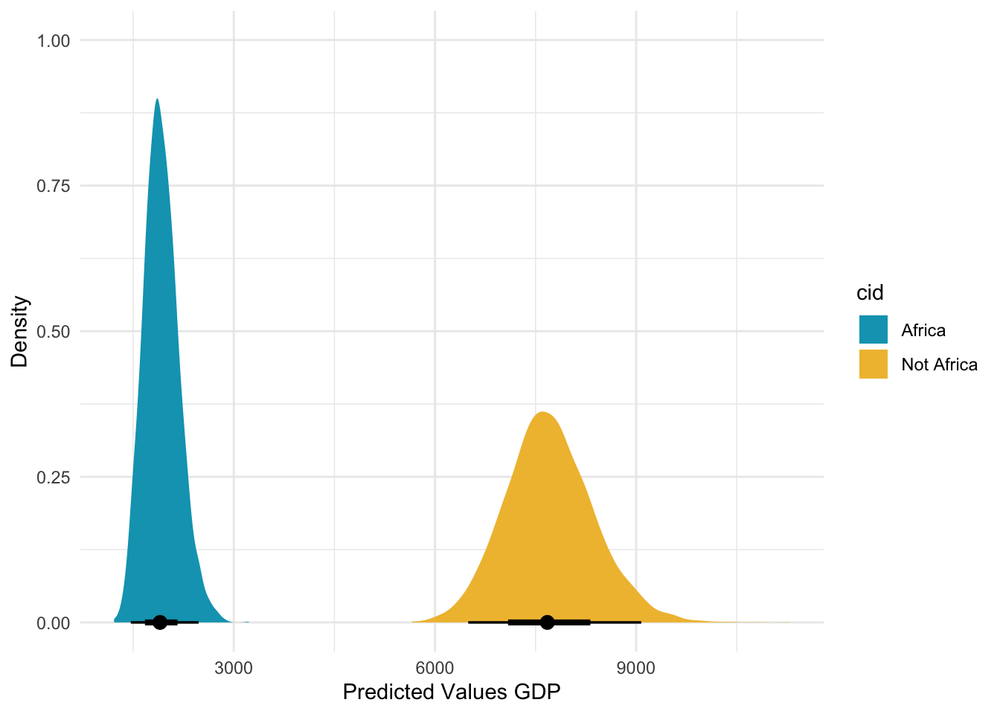
To replicate the work done in Rethinking we can simply do:
nd <-
crossing(cid= 1:2,
rugged_std = seq(from = -0.2, to = 1.4, length.out = 30)) |>
mutate(rugged_std_c = rugged_std - mean(rugged$rugged_std))
countries <- c("Equatorial Guinea", "South Africa", "Seychelles", "Swaziland", "Lesotho", "Rwanda", "Burundi", "Luxembourg", "Greece", "Switzerland", "Lebanon", "Yemen", "Tajikistan", "Nepal")
fit = fitted(
int_model_binary,
newdata = nd,
probs = c(0.015, 0.985)
) |>
data.frame() |>
bind_cols(nd) |>
mutate(cont_africa = ifelse(cid == 1, 'African Nations', 'Non-African Nations'))
cleaned = rugged |>
mutate(cont_africa = ifelse(cid == 1, 'African Nations', 'Non-African Nations'))
ggplot(cleaned, aes(x = rugged_std, y = log_gdp_z, fill = cont_africa, color = cont_africa)) +
geom_smooth(data = fit,
aes(y = Estimate, ymin = Q1.5, ymax = Q98.5)) +
coord_cartesian(xlim = c(0, 1)) +
theme(legend.position = "none") +
facet_wrap(vars(cont_africa))Continous Interactions
data(tulips, package = 'rethinking')
d = tulips |>
mutate(blooms_std = blooms/max(blooms),
water_cent = water - mean(water),
shade_cent = shade - mean(shade))Fortunately in the case of continous by continous interactions we really only need to put a prior on one term so we can just do.
cont_priors = c(
prior(normal(0.5, 0.25), class = Intercept),
prior(normal(0, 0.25), class = b, coef = water_cent),
prior(normal(0, 0.25), class = b, coef = shade_cent),
prior(normal(0, 0.25), class =b, coef = 'water_cent:shade_cent'),
prior(exponential(1), class = sigma)
)
cont_inter = brm(
blooms_std ~ water_cent:shade_cent + water_cent + shade_cent,
data = d,
prior = cont_priors
)Cool now lets try to recreate the plot in Rethinking using marginaleffects
preds = get_draws(
predictions(cont_inter, newdata = datagrid(
shade_cent = -1:1,
water_cent = -1:1
))
) |>
mutate(nice_labs = glue::glue('Shade (centered) = {shade_cent}'))
ggplot(preds, aes(x = water_cent, y = draw, group = drawid)) +
geom_smooth(alpha = 1/5) +
geom_point(alpha = 0.5) +
facet_wrap(vars(nice_labs)) +
labs(y = 'Blooms (Standardized)', x = 'Water (centered)')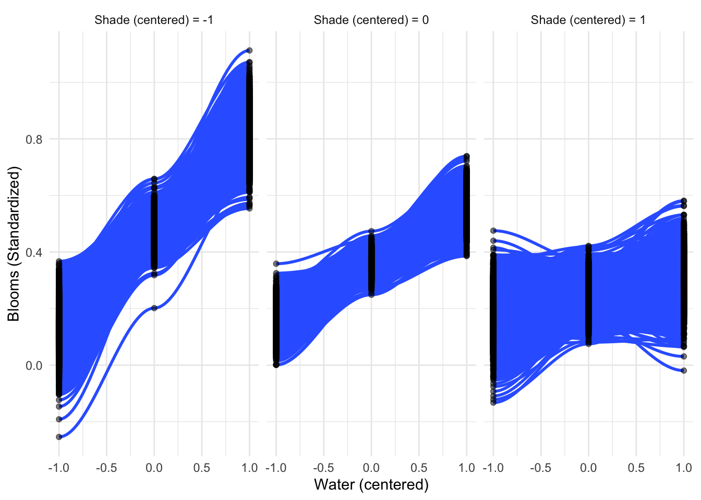
Modeling DGP’s of all different flavors.
It would be nice if everything was linear. It is nice that OLS generally performs pretty well in a lot of cases where it has no reason behaving that way. However, modeling the DGP correctly often is helpful if anything to give us some sanity checks.
Logits
data(UCBadmit,package = 'rethinking')
admit_data = UCBadmitCounts and events are inherently bounded either by force of de facto bounded. We have been using the exponential distribution in a lot of our priors. Effectively the exponetial distribution is just a distribution that tells us about a time to an event that has a constant rate. We have really just been using it to constrain the unexplained variance to be postive. The difficulty with setting priors for a logit is that we are doing it on the log odds scale so they don’t always have an intuitive mapping as they did in OLS land.
We can kind of think of it as anything +4 = almost always and anything -4=almost never so when we stretch out the prior or compress it on the logit scale it will create probability distributions we may not have a good intuition of what the prior should be. Fortunately we can get a handle on this using the qlogis and plogis function from R to get a sense of how our priors are going to translate on the log-odds scale and on the probability scale. The function link function can shrink turn somewhat reasonable priors into really extreme values. This kind of makes since in logit world we our outcome is constrained to 1 and 0 while OLS can take on really any value as long it can be computed.
Code
data(weather_perth, package = 'bayesrules')
weather = weather_perth |>
select(day_of_year, raintomorrow, humidity9am, humidity3pm, raintoday) |>
mutate(across(c(humidity9am, humidity3pm),
~scale(., scale = FALSE), .names = "{col}_centered")) |>
mutate(across(c(humidity9am, humidity3pm),
~as.numeric(scale(., scale = FALSE)), .names = "{col}_c")) |>
mutate(raintomorrow_num = as.numeric(raintomorrow) - 1)
extract_attributes <- function(x) {
attributes(x) %>%
set_names(janitor::make_clean_names(names(.))) %>%
as_tibble() %>%
slice(1)
}
unscaled <- weather %>%
select(ends_with("_centered")) |>
summarize(across(everything(), ~extract_attributes(.))) |>
pivot_longer(everything()) |>
unnest(value) |>
split(~name)So if we think that the baseline rate of rain is about 20% we can get see what a reasonable prior on the log-odds scale would look like this:
qlogis(.2)So if we think that there is a range between 15% to 25% of rain is normal than we can translate it to roughly around .5 in either direction. It is a little hard to think of what that would translate to so we can use plogis to convert it back to the probablity scale. So we have a range between 8% and 40% chance of rain. This honestly seems fine to me since I don’t have any good sense of how likely or unlikely this is for Peth.
plogis(qlogis(0.2) - (2 * 0.5))
plogis(qlogis(0.2) + (2 * 0.5))The priors for how humidity will shape the weather are a bit hard to get my head around because I don’t have a good idea about what makes sense. The Bayes rules book makes the argument that 0.07 makes a lot of sense? If we plug this into the exp ratio
exp(0.07 - 0.07)
## [1] 1
exp(0.07 + 0.07)So the odds of rain the next will increase by 0-15% for each percentage point increase in humidity
priors_first = c(prior(normal(-1.39, 0.5), class = Intercept),
prior(normal(0.07, 0.035), class = b, coef = 'humidity9am_c'))
clrs <- MetBrewer::met.brewer("Lakota", 6)
check_weather_priors = brm(
raintomorrow ~ humidity9am_c,
data = weather,
family = bernoulli(link = 'logit'),
prior = priors_first,
sample_prior = 'only'
)
p1 <- tibble(
humidity9am = seq(0, 100, by = 0.1)
) |>
mutate(humidity9am_c = humidity9am - unscaled$humidity9am_centered$scaled_center) |>
add_epred_draws(check_weather_priors, ndraws = 100) |>
ggplot(aes(x = humidity9am, y = .epred)) +
geom_line(aes(group = .draw), alpha = 0.5, size = 0.5, color = clrs[6]) +
labs(x = "9 AM humidity", y = "Probability of rain tomorrow")
p2 <- tibble(
humidity9am = seq(0, 100, by = 0.1)
) |>
mutate(humidity9am_c = humidity9am - unscaled$humidity9am_centered$scaled_center) |>
add_predicted_draws(check_weather_priors, ndraws = 100) |>
group_by(.draw) |>
summarize(proportion_rain = mean(.prediction == 1)) |>
ggplot(aes(x = proportion_rain)) +
geom_histogram(binwidth = 0.02, color = "white", fill = clrs[1]) +
labs(x = "Proportion of rainy days in each draw", y = "Count")
p1 | p2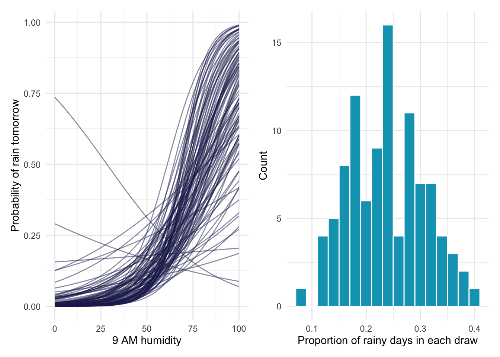
I think we can feel pretty good about the worlds we have drawn. Lets go ahead and check the posteriors
real_model = brm(
raintomorrow ~ humidity9am_c,
data = weather,
family = bernoulli(link = 'logit'),
prior = priors_first
)
pp_check(real_model, ndraws = 50)That is a pretty good looking posterior predictive check. We desire posterior predicitive checks this pretty.
Multilevel Models
Varying Intercepts sans predictors
Confession these guys scare me a bit. Knowing what to call them is fraught they have weird syntax and also just have a ton of machinery behind them. The general idea is that categories tell us something interesting and important about observations in the category and across categories. We are basically using partial pooling where we are not fully treating each category as independent like we would with a fixed effect model.
data('reedfrogs', package = 'rethinking')
add_tank = reedfrogs |>
mutate(tank = row_number(),
preds = ifelse(pred == 'no' ,1L, 2L),
group = ifelse(size == 'small', 1L, 2L),
log_density_sd = scale(log(density)))When thinking about models with multiple levels like we have in the reed frog example is we need to ask ourselves is how much will each of the clusters vary? In this notation we are trying to learn \(\bar{a}\) which is effectively the average tank and then try to learn how variable the tanks are.
\[ \begin{aligned} \text{Survived} \sim Binomial(D_{i}, p_{i}) \\ logit(p_i) = \alpha_{T[i]} \\ \alpha_j \sim Normal(\bar{\alpha, ?}) \\ \bar{a} \sim Normal(0, 1.5) \end{aligned} \]
It is kind of hard to get an idea we can go through and use cross validation to get an idead of what sigma should be. We are going to have to use some wonky(to me) syntax. In this case if we just didn’t include the | trials(density) it would make the assumption that surv was binary which is mostly fine if that is the case. We want to model the proportion that survived from each tank. So we have to tell brms how many survivd.
Code
with_trials <-
brm(data = add_tank,
family = binomial,
surv | trials(density) ~ (1 | tank),
prior = c(prior(normal(0, 1.5), class = Intercept), # alpha bar
prior(exponential(1), class = sd)), # sigma
iter = 5000, warmup = 1000, chains = 4, cores = 4)
check_mod_priors = \(sigma_values = 1.5){
new_prior = c(set_prior(paste0("normal(0, ", sigma_values, ")"), class = 'Intercept'), # alpha bar
set_prior('exponential(1)', class = 'sd'))
m = brm(data = add_tank,
family = binomial,
surv | trials(density) ~ 1 + (1 | tank),
prior = new_prior, # sigma
iter = 5000, warmup = 1000, chains = 4, cores = 10)
crit = add_criterion(m, criterion = 'loo')
return(crit)
}
sig_values = seq(0.1, 5, by = 0.1)
names_vec = paste('Sigma = ', sig_values)
names(sig_values) = names_vec
check_models = map(sig_values, check_mod_priors)
get_psis = map(check_models, \(x){
psis(x)
})This is kind of an expensive task computationally and not all that fun to wrangle. We can actually learn the optimal posterior distribution of sigma from modeling. If we look at the summary of the model we can see that the model learns the optimal value of sigma or the global variation of tanks.
tank_priors = c(prior(cauchy(0, 1.5), class = Intercept),
prior(exponential(1), class = sd))
with_trials <-
brm(data = add_tank,
family = binomial,
surv | trials(density) ~ (1 | tank),
prior = tank_priors,
iter = 5000, warmup = 1000, chains = 4, cores = 4)
with_trials |>
tidy()Varying Intercepts with Predictors
Cool well Rich doesn’t actually go into how to use this immediately which is always fun. The issue we are going to run into is that when we add features is tha varying effects or effects per intercept can introduce confounding. To side step some of the issues of following along week by week I am going to use the Bayes Rules book.
data('cherry_blossom_sample', package = 'bayesrules')
running = cherry_blossom_sample |>
select(runner, age, net) |>
drop_na() |>
mutate(runner_nice = glue::glue('Runner {runner}'),
runner_nice = fct_inorder(runner_nice),
across(c(net, age), \(x) scale(x, scale = FALSE), .names = '{col}_c'))
unscaled = running |>
select(ends_with('c')) |>
summarise(across(everything(), \(x) extract_attributes(x))) |>
pivot_longer(everything()) |>
unnest(value) Whats nice is that all the runners are in one age group. We would expect that there would be interactions between the runner specific intercepts and the age specific intercepts. Subsequently we would need priors for those age specific intercepts.
ggplot(running, aes(x = net)) +
geom_histogram(color = 'white')As we would kind of expect we see spikes around specific times eg some people really want to finish aroun the 90 minute mark or under 2 hours. Since every runner is different in their own way there are some stuff that is going to be different. Some people are naturally faster or have been training for longer. However, we can use information from each of the runners to learn something about the other runners. So tune the varying intercepts part of the prior.
running_priors = c(
prior(normal(100, 10), class = Intercept),
prior(exponential(1), class = sd))
first_cut = brm(
net ~ (1| runner),
data = running,
prior = running_priors,
sample_prior = 'only'
)
p1 = running |>
add_predicted_draws(first_cut) |>
ggplot(aes(x = .prediction, group = .draw)) +
geom_density() +
labs(title = 'SD = 1')This doesn’t look like totally awful but it seems like we have a.
running_priors2 = c(
prior(normal(100, 10), class = Intercept),
prior(exponential(0.5), class = sd))
first_cut = brm(
net ~ (1| runner),
data = running,
prior = running_priors2,
sample_prior = 'only'
)
plot_dat = running |>
add_predicted_draws(first_cut)
p2 = ggplot(plot_dat,aes(x = .prediction, group = .draw)) +
geom_density() +
labs(title = 'SD = 0.5')That is nice we are getting slightly less impossible draws with more and more looking like our real sample. We can definitely going to tune this a bit more since we seem to have lots of deviation in the spikes. We would imagine that members of the same group are far less variable than this. Lets take a look at the differences between the real and predicitions from our prior.
plot_dat |>
ungroup() |>
reframe(actual_avg = mean(net),
predicted_avg = mean(.prediction),
actual_range = range(net),
predicted_range = range(net))The ranges look pretty good! There is a pretty big difference in the actual and predicted average so maybe a little bit more tuning of the standard deviation will do us some good.
running_priors3 = c(
prior(normal(100, 10), class = Intercept),
prior(exponential(0.1), class = sd))
first_cut = brm(
net ~ (1| runner),
data = running,
prior = running_priors3,
sample_prior = 'only'
)
plot_dat = running |>
add_predicted_draws(first_cut)
p3 = ggplot(plot_dat,aes(x = .prediction, group = .draw)) +
geom_density() +
labs(title = 'SD = 0.1')Now lets look at the changes summary statistics.
plot_dat |>
ungroup() |>
reframe(actual_avg = mean(net),
predicted_avg = mean(.prediction),
actual_range = range(net),
predicted_range = range(net))Lets look at the plots next to each other.
p1 / p2/ p3It is somewhat hard to tell what is the best prior would be. The argument that they make in the book is that that we wouldn’t expect a ton of variation between and within runners in the same age group. Lets simultate out the prior
sd_1 = ggplot() +
stat_function(fun = ~dexp(.,1/10), geom = 'area') +
xlim(c(0, 60))
sd_5 = ggplot() +
stat_function(fun = ~dexp(., 5/10), geom = 'area') +
xlim(c(0, 60))
sd_un = ggplot() +
stat_function(fun = ~dexp(., 1), geom = 'area') +
xlim(c(0, 60))
sd_1 | sd_5 | sd_un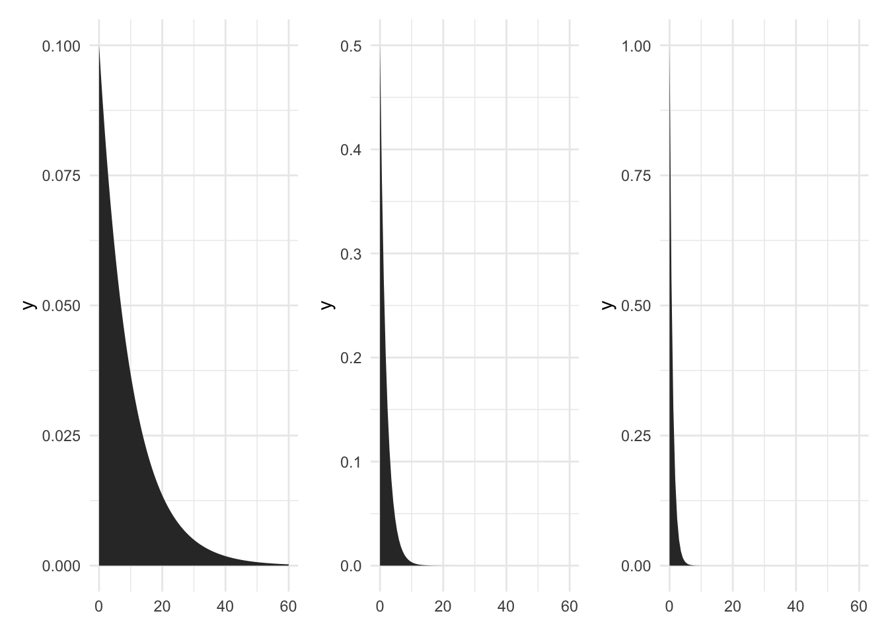
The exponetial of 1 and 0.5 seems to think that there is a lot smaller variation I think the more informative prior seems to letting the sigmas vary a bit more. Which makes sense if we have a just signup kind of race. An exponential of 1 or 0.5 might make more sense if we were looking at the times for professional racers where the margins are a lot slimmer. So lets go with the 0.1. Next we are going to think about the relationship between age and time. Or slightly rephrased, as you get older how many minutes do you lose off your mile? That is a somewhat hard question to answer. Lets start with a slightly agressive prior. The reason I say agressive is that we are making the argument that as age increases we lose about two and half minutes on average give or take a minute.
priors_runners = c(
prior(normal(100, 10), class = Intercept),
prior(normal(2.5, 1), class = b),
prior(exponential(0.1), class = sigma),
prior(exponential(0.1), class = sd)
)
runner_model = brm(
net ~ age_c + (1|runner),
data = running,
prior = priors_runners,
sample_prior = 'only'
)
running |>
add_linpred_draws(runner_model, ndraws = 8) |>
ggplot(aes(x = age, y = net)) +
geom_line(aes(y = .linpred, group = paste(runner, .draw))) +
facet_wrap(vars(.draw))These look pretty good! Now its time to actually incorporate the data
runner_model_final = brm(
net ~ age_c + (1|runner),
data = running,
prior = priors_runners,
iter = 4000, cores = 10, threads = 5
)
runner_predictions =
predictions(runner_model_final, re_formula = NA, ndraws = 200, type = 'prediction') |>
get_draws() |>
mutate(age = (age_c + mean(running$age)))
me = ggplot(runner_predictions, aes(x = age, y = draw)) +
stat_lineribbon(alpha = 0.5) +
labs(x = 'Age', y = 'Race Time(Minutes)', title = 'Made with marginaleffects') +
theme(legend.position = 'none') +
scale_y_continuous(breaks = seq(80, 100, by = 5))
lpd = runner_model_final |>
linpred_draws(running, ndraws = 200, re_formula = NA) |>
ggplot(aes(x = age, y = net)) +
stat_lineribbon(aes(y = .linpred)) +
labs(x = 'Age', y = 'Race time', title = 'made with linepredraws') +
theme(legend.position = 'none')These are pretty close to the same!
me + lpd Basically all this is telling us as that effectively as age increases so does race time for the typical runner. The next step is to look at the runner specific analysis or the ‘fixed effect’ in MLM.
runner_effects = runner_model_final |>
spread_draws(b_Intercept, r_runner[runner,]) |>
mutate(runner_intercepts = b_Intercept + r_runner) |>
ungroup() |>
mutate(runner = fct_reorder(factor(runner), runner_intercepts, .fun = mean))
global_effect = runner_model_final |>
tidy(effects = c('fixed'), conf.level = 0.89) |>
filter(term == '(Intercept)')
ggplot(runner_effects, aes(x = runner_intercepts, y = runner)) +
stat_pointinterval() +
annotate(geom = 'rect', ymin = -Inf, ymax = Inf,
xmin = global_effect$conf.low, xmax = global_effect$conf.high, alpha = 0.5) +
geom_vline(xintercept = global_effect$estimate)Varying Intercepts and Varying Slopes
This is all well and dandy but this is what it looks like when we just fit an OLS model per runner
running |>
ggplot(aes(x = age, y = net, group = runner)) +
geom_smooth(method = "lm", se = FALSE, size = 0.5, color = clrs[1]) +
coord_cartesian(ylim = c(60, 125)) +
labs(x = "Age", y = "Race time",
title = "Observed data",
subtitle = "Basic per-runner OLS models")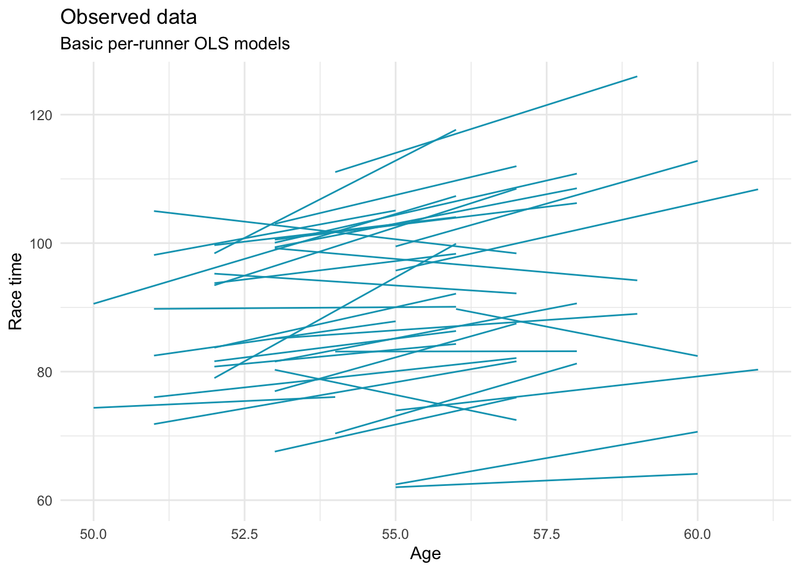
This makes sense because time effects us all differently if we think about the effect of age on football positions we get a different relationship to production. A QB can be uber productive in their 30 and above seasons versus a wide receiver or corner. To account for these relationships we need to model a specific intercept and a particular slope for each runner.
We need a more robust language for these kinds of models because they are uber complicated because now both the intercept and the slope per each runner are going to move together. We could theoretically write them as distributions but the tinkering is going to be a bear. Instead we can use multi-dimensional priors to describe the correlations between the features. There are effectively three things we need to think about
the feature means: the mean of the intercepts, the global intercept etc
the correlation matrix: what is the expected correlation
How much to they vary?
The tricky part is how do we set a prior for a correlation matrix? We can use an LKJ prior. This prior is a effectively a shape. Bigger values are more skeptical of large correlation coefficients.
withr::with_seed(123, {
rho_plots <- tibble(rho = c(-0.99, 0, 0.99)) |>
mutate(title = glue::glue("ρ = {rho}"),
subtitle = c("Strong negative correlation\nbetween slope and intercept",
"No correlation\nbetween slope and intercept",
"Strong positive correlation\nbetween slope and intercept")) |>
mutate(Sigma = purrr::map(rho, ~matrix(c(1, .x, .x, 1), 2, 2))) |>
mutate(data = purrr::map(Sigma, ~{
MASS::mvrnorm(n = 100, mu = c(2, 3), Sigma = .x) |>
as_tibble() |>
rename(b0 = V1, b1 = V2)
})) |>
mutate(plot = pmap(list(data, title, subtitle), ~{
ggplot(..1) +
geom_abline(aes(intercept = b0, slope = b1, color = b0),
size = 0.3) +
scale_color_viridis_c(option = "rocket", begin = 0.1, end = 0.85,
limits = c(-1, 5)) +
labs(title = ..2, subtitle = ..3, color = "β<sub>0</sub>") +
lims(x = c(0, 3), y = c(0, 10)) +
theme(axis.line = element_line(),
legend.title = element_markdown())
}))
})
wrap_plots(rho_plots$plot) +
plot_layout(guides = "collect")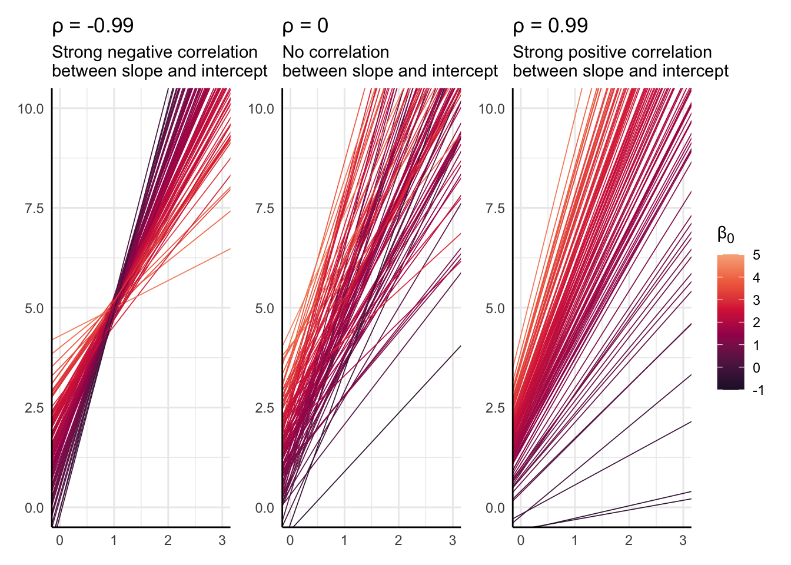
In this case when the correclation is large and negative big intercepts have smaller slopes this would mean that individual runners who have longer baseline race times would see less of an age effect. When p is bigger and positive bigger intercepts have steeper slopes meaning runners with longer baseline race times would have more of an age effect. Whats nice about the LKJ prior in brms is that if we don’t want to touch the means and variance parts we don’t have to we can just set the regularization parts. The breakdown looks like this
\(\eta\) < 1 extreme correlations are more likely
\(\eta\) = 1, all correlations are equally likely
\(\eta\) > 1 central correlations are more likely, and the larger the \(\eta\) the narrower the distribution is around 0
Here we will start with a fairly bland prior.
varying_slope_priors_1 = c(prior(normal(100, 10), class = Intercept),
prior(normal(2.5, 1), class = b),
prior(exponential(0.1), class = sigma),
prior(exponential(0.1), class = sd),
prior(lkj(1), class = cor))
var_mod1 = brm(
net ~ age_c + (1 + age_c | runner),
data = running,
prior = varying_slope_priors_1,
iter = 4000, threads = threading(5), cores = 10,
control = list(adapt_delta = 0.9),
sample_prior = 'only'
)Lets look at the sims
sim1 = running |>
add_predicted_draws(var_mod1)
ggplot(sim1, aes(x = .prediction, group = .draw)) +
geom_density() +
coord_cartesian(xlim = c(0, 300))This seems broadely reasonable! What if we bump up the regularization a bit?
varying_slope_priors_2 = c(prior(normal(100, 10), class = Intercept),
prior(normal(2.5, 1), class = b),
prior(exponential(0.1), class = sigma),
prior(exponential(0.1), class = sd),
prior(lkj(1.5), class = cor))
var_mod2 = brm(
net ~ age_c + (1 + age_c | runner),
data = running,
prior = varying_slope_priors_2,
iter = 4000, threads = threading(5), cores = 10,
control = list(adapt_delta = 0.9),
sample_prior = 'only'
)Now lets look at the prediction from the model
running |>
add_predicted_draws(var_mod2) |>
ggplot(aes(x = .prediction, group = .draw)) +
geom_density() +
coord_cartesian(xlim = c(0, 300))To my eye these look pretty similar so lets fit both and then compare the three models. Now lets check the corss validation statistics
var_mod1 = update(
var_mod1,
sample_prior = 'no'
)
var_mo2 = update(var_mod2,
sample_prior = 'no')Now we should go and look at how far off each model is
p1 = pp_check(runner_model_final, ndraws = 25) +
labs(title = 'Random Intercepts only')
p2 = pp_check(var_mod1, ndraws = 25) +
labs(title = 'Random Intercepts & Slopes', subtitle = 'ETA = 1')
p3 = pp_check(var_mo2, ndraws = 25) +
labs(title = 'Random Intercepts & Slopes', subtitle = 'ETA = 1.5')
p1 | p2 | p3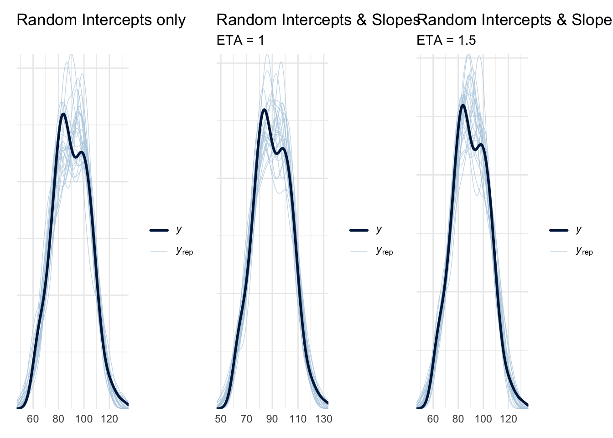
These all look vaguely the same so now we should check how well they predict out of sample
loo_stats = tribble(~model_name, ~model,
'Random Intercepts', runner_model_final,
'Random Intercepts & Slopes \n ETA = 1', var_mod1,
'Random Intercepts & Slopes \n ETA = 1.5', var_mo2) |>
mutate(loo = purrr::map(model, \(x) loo(x))) |>
mutate(loo_stuff = purrr::map(loo, ~as_tibble(.$estimates, rownames = "statistic"))) |>
select(model_name, loo_stuff) |>
unnest(loo_stuff) |>
filter(statistic == "elpd_loo") |>
arrange(desc(Estimate))
loo_statsMy eyes do not deceive effectively we aren’t extracting more predicitive accuracy out of the model. Which is great we can use the random intercepts safely. Now lets play around with the cauchy prior on the random intercepts model and then see how this effects things.
priors_runners = c(
prior(normal(100, 10), class = Intercept),
prior(normal(2.5, 1), class = b),
prior(cauchy(0,10), class = sigma),
prior(cauchy(0,10), class = sd)
)
runner_model = brm(
net ~ age_c + (1|runner),
data = running,
prior = priors_runners,
sample_prior = 'only'
)
check_models_cauchy = running |>
add_predicted_draws(runner_model)
ggplot(check_models_cauchy, aes(x = .prediction, group = .draw)) +
geom_density() +
coord_cartesian(xlim = c(0, 300))Wow umm the predictions look uber wonky. Lets see what happens when we fit the model
When we plot the posterior predictions we see that we have slightly heavier tails which is kind of the point of using the cauchy distribution.
pp_check(runner_model_cauchy, ndraws = 25)Now lets go and grab the posterior predictions.
cauchy_preds = running |>
add_linpred_draws(runner_model_cauchy, ndraws = 200, re_formula = NA) |>
ggplot(aes(x = age, y = net)) +
stat_lineribbon(aes(y = .linpred)) +
labs(title = 'Runner Model with Cauchy Priors')
lpd + cauchy_preds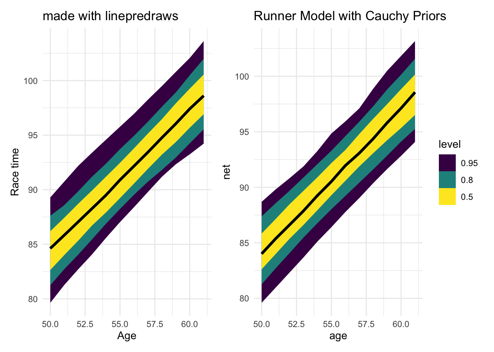
These are vaugely the same in terms of posterior prdictions. The credible intervals for the cuachy priors seem to be a little bit different.
loo_stats = tribble(~model_name, ~model,
'Random Intercepts exponential prior', runner_model_final,
'Random Intercepts Cauchy prior', runner_model_cauchy,
'Random Intercepts & Slopes \n ETA = 1', var_mod1,
'Random Intercepts & Slopes \n ETA = 1.5', var_mo2) |>
mutate(loo = purrr::map(model, loo)) |>
mutate(loo_stuff = purrr::map(loo, ~as_tibble(.$estimates, rownames = "statistic"))) |>
select(model_name, loo_stuff) |>
unnest(loo_stuff) |>
filter(statistic == "elpd_loo") |>
arrange(desc(Estimate))
loo_stats |>
tinytable::tt()The cauchy prior does slightly bettter than the random intercepts model with a exponential prior but not so dramatic that I would be sweating about it.
Nested Structures
As you might imagine there are lots of structures that we can model. A particularly relevant setup is the mountain climbers example. We often have nested structure so in this case we have climber in expedition teams. For MMM’s we have people within channels and within that we have additional structures that we may know based off of demographic information or clusters that we can model. In this case we will start small and then we can build on these fundamentals because we also have expeditions within season and then age.
data('climbers_sub', package = 'bayesrules')
climbers = climbers_sub |>
select(expedition_id, member_id, success, year, season,
age, expedition_role, oxygen_used) |>
mutate(age_c = scale(age, scale = FALSE))
extract_attributes <- function(x) {
attributes(x) %>%
set_names(janitor::make_clean_names(names(.))) %>%
as_tibble() %>%
slice(1)
}
unscaled_climbers <- climbers %>%
select(ends_with("_c")) |>
summarize(across(everything(), ~extract_attributes(.))) |>
pivot_longer(everything()) |>
unnest(value) |>
split(~name)Lets get some basic summary statistics
climber_expedition = climbers |>
group_by(expedition_id) |>
summarise(total = n(),
prop_success = mean(success))
success_by_size = ggplot(climber_expedition, aes(x = total, y = prop_success)) +
geom_count() +
labs(x = 'Expedition Team Size', y = 'Proportion of Expedition Team That Finished')
dist_of_team_finished = ggplot(climber_expedition, aes(x = prop_success)) +
geom_histogram() +
labs(x = 'Proportion of Expedition Team That Finished')
success_by_size + dist_of_team_finishedNow lets look at the success by size by season
climbers |>
mutate(total = n(),
prop_success = mean(success), .by = expedition_id) |>
ggplot( aes(x = total, y = prop_success)) +
geom_count() +
labs(x = 'Expedition Team Size', y = 'Proportion of Expedition Team That Finished') +
facet_wrap(vars(season)) This is an interesting partial pooling thing that we will look at bit later. Most of the expeditions happen during Spring and Autumn with only a few happening in winter with close to no success and one during summer with close to 100 percent success. So seasons are definitely something that we would want to model.
If we look at the model in the book we expect that whether or not you use oxygen is importanat
climbers |>
group_by(age, oxygen_used) |>
summarise(success_rate = mean(success)) |>
ggplot(aes(x = age, y = success_rate, color = oxygen_used)) +
geom_point()As we can see there age is a pretty poor predictor of a success rate compared to oxygen. So now lets set some priors.
climbing_priors = c(
prior(normal(0, 2.5), class = Intercept),
prior(normal(0, 2.5), class = b),
prior(exponential(1), class = sd)
)
climbing_prior_mod = brm(
success ~ age_c + oxygen_used + (1 | expedition_id),
data = climbers,
family = bernoulli(link = 'logit'),
prior = climbing_priors,
sample_prior = 'only'
)
check_prds = climbers |>
add_predicted_draws(climbing_prior_mod, ndraws = 1000)
ggplot(check_prds, aes(x = age, y = .prediction, color = oxygen_used)) +
geom_dots(aes(side = ifelse(.prediction == '1', 'bottom', 'top')), pch = 19, scale = 0.2)pp_check(climbing_prior_mod)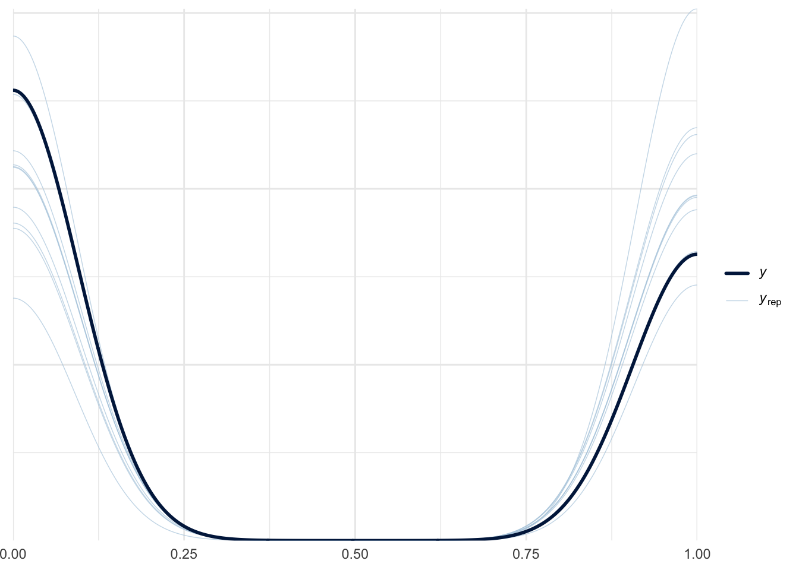
Hmmm it seems that we could probably do a bit better. If we check the coefficients the implication is that if we use oxygen then it will decrease our likelihood of survival which intuitively we know is crazy! Once again working with
Ordered Monotonic predictors
Lets say we have some ordered predictor like education. We would expect that the difference between elementary and college is not linear. The effect would look something like this
$$ \[\begin{aligned} 1(Elementary) \phi_i = 0 \\ 2(\text{Middle School}) \phi_i = \delta_1 \\ 3(\text{High School}) \phi_i = \delta_1 + \delta_2 \\ 4 (\text{Some College}) \phi_i = \delta_1 + \delta_3 \end{aligned}\]$$
And so on and so forth. Effectively we are adding the effect current level of education completed plus the effect of the previous level. In our example Elementary school does not really count because it is the first level so the effect of completing elementary school plus the effect of completing middle school is just the effect of middle school. For ordered categories we are sampling from a Dirichlet distribution. Funnily enough these can be thought of as weird beta distributions.
Gaussian Processes
These seem to be uber popular with Bayesians who do anything related to time and space. The idea kind of boils down to Tobler’s first law of geography “things that are close to each other are more similar than things that are far away from each other.”
A Gaussian process is “an inifinte dimensional generalization of multivariate distributions.” In English this says that we use a kernel function that generalizes to infinite dimensions/observations/predictions instead of a conventional variance-covariance matrix. If you think of the varying slopes and intercepts models that we have worked with before there isn’t any ordering to the categories. I have a hierarcical ranking of seasons but that is not a constraint that I would ever impose on a model. If we wanted to include something like distance or time the variance-covariance matrix would be huge because well it is a continous variable. Instead of the standard matrix we just sub in a kernel to take the place of this big unruly matrix. A kernel function willl generalize to infinite dimensions. The kernel gives the covariance between any pair of points as function of their distance. As always we set a prior which is effectively the rate of decay between the tips. Like 0 distance all the way to the max of the distance and the maximum covariance. These are kind of just regularization priors in some respect.
References
Gelman, Andrew, John B Carlin, Hal S Stern, David B Dunson, Aki Vehtari, and Donald B Rubin. 2013. Bayesian Data Analysis Third Edition.